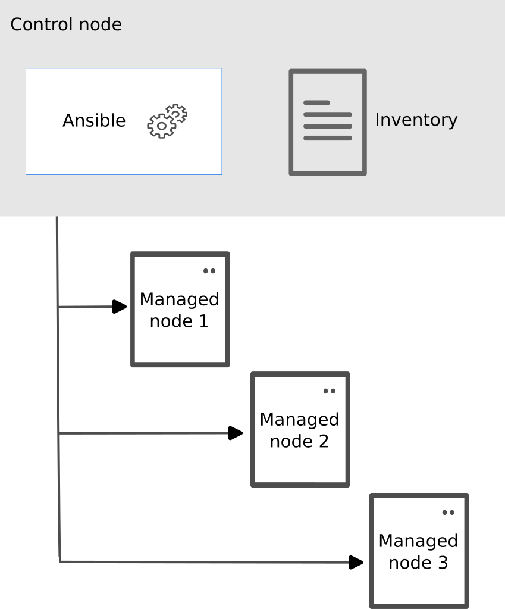

<!DOCTYPE html>
<html xmlns="http://www.w3.org/1999/xhtml" lang="" xml:lang="">
    <head>
        <meta charset="utf-8" />
        <meta name="generator" content="markdown-it" />
        <meta name="viewport" content="width=device-width, initial-scale=1.0, user-scalable=yes" />
        <meta name="author" content="runner" />
        <meta name="dcterms.date" content="2025-04-08 13:44:52.324" />
        <title>ansible</title>
        <style type="text/css">
            code {
                white-space: pre-wrap;
            }
            span.smallcaps {
                font-variant: small-caps;
            }
            span.underline {
                text-decoration: underline;
            }
            div.column {
                display: inline-block;
                vertical-align: top;
                width: 50%;
            }
        </style>
        <style type="text/css">
            a.sourceLine {
                display: inline-block;
                line-height: 1.25;
            }
            a.sourceLine {
                pointer-events: none;
                color: inherit;
                text-decoration: inherit;
            }
            a.sourceLine:empty {
                height: 1.2em;
            }
            .sourceCode {
                overflow: visible;
            }
            code.sourceCode {
                white-space: pre;
                position: relative;
            }
            div.sourceCode {
                margin: 1em 0;
            }
            pre.sourceCode {
                margin: 0;
            }
            @media screen {
                div.sourceCode {
                    overflow: auto;
                }
            }
            @media print {
                code.sourceCode {
                    white-space: pre-wrap;
                }
                a.sourceLine {
                    text-indent: -1em;
                    padding-left: 1em;
                }
            }
            pre.numberSource a.sourceLine {
                position: relative;
                left: -4em;
            }
            pre.numberSource a.sourceLine::before {
                content: attr(title);
                position: relative;
                left: -1em;
                text-align: right;
                vertical-align: baseline;
                border: none;
                pointer-events: all;
                display: inline-block;
                -webkit-touch-callout: none;
                -webkit-user-select: none;
                -khtml-user-select: none;
                -moz-user-select: none;
                -ms-user-select: none;
                user-select: none;
                padding: 0 4px;
                width: 4em;
                background-color: #ffffff;
                color: #a0a0a0;
            }
            pre.numberSource {
                margin-left: 3em;
                border-left: 1px solid #a0a0a0;
                padding-left: 4px;
            }
            div.sourceCode {
                color: #1f1c1b;
                background-color: #ffffff;
            }
            @media screen {
                a.sourceLine::before {
                    text-decoration: underline;
                }
            }
            code span {
                color: #1f1c1b;
            } /* Normal */
            code span.al {
                color: #bf0303;
                background-color: #f7e6e6;
                font-weight: bold;
            } /* Alert */
            code span.an {
                color: #ca60ca;
            } /* Annotation */
            code span.at {
                color: #0057ae;
            } /* Attribute */
            code span.bn {
                color: #b08000;
            } /* BaseN */
            code span.bu {
                color: #644a9b;
                font-weight: bold;
            } /* BuiltIn */
            code span.cf {
                color: #1f1c1b;
                font-weight: bold;
            } /* ControlFlow */
            code span.ch {
                color: #924c9d;
            } /* Char */
            code span.cn {
                color: #aa5500;
            } /* Constant */
            code span.co {
                color: #898887;
            } /* Comment */
            code span.cv {
                color: #0095ff;
            } /* CommentVar */
            code span.do {
                color: #607880;
            } /* Documentation */
            code span.dt {
                color: #0057ae;
            } /* DataType */
            code span.dv {
                color: #b08000;
            } /* DecVal */
            code span.er {
                color: #bf0303;
                text-decoration: underline;
            } /* Error */
            code span.ex {
                color: #0095ff;
                font-weight: bold;
            } /* Extension */
            code span.fl {
                color: #b08000;
            } /* Float */
            code span.fu {
                color: #644a9b;
            } /* Function */
            code span.im {
                color: #ff5500;
            } /* Import */
            code span.in {
                color: #b08000;
            } /* Information */
            code span.kw {
                color: #1f1c1b;
                font-weight: bold;
            } /* Keyword */
            code span.op {
                color: #1f1c1b;
            } /* Operator */
            code span.ot {
                color: #006e28;
            } /* Other */
            code span.pp {
                color: #006e28;
            } /* Preprocessor */
            code span.re {
                color: #0057ae;
                background-color: #e0e9f8;
            } /* RegionMarker */
            code span.sc {
                color: #3daee9;
            } /* SpecialChar */
            code span.ss {
                color: #ff5500;
            } /* SpecialString */
            code span.st {
                color: #bf0303;
            } /* String */
            code span.va {
                color: #0057ae;
            } /* Variable */
            code span.vs {
                color: #bf0303;
            } /* VerbatimString */
            code span.wa {
                color: #bf0303;
            } /* Warning */
        </style>
        <!--
  Firefox non carica font da locale quindi il font può non essere visibile
  quando di carica la pagina da locale.
  Bisogna impostare about:config
    security.fileuri.strict_origin_policy = false
  -->
        <link rel="stylesheet" href="../../inc/css/katex.min.css" />
        <link rel="stylesheet" href="../../inc/css/fonts/google_fonts.css" />
        <!-- <link href="https://cdn.jsdelivr.net/npm/bootstrap@5.3.0-alpha1/dist/css/bootstrap.min.css" rel="stylesheet" integrity="sha384-GLhlTQ8iRABdZLl6O3oVMWSktQOp6b7In1Zl3/Jr59b6EGGoI1aFkw7cmDA6j6gD" crossorigin="anonymous"> -->
        <link rel="stylesheet" href="../../inc/css/bootstrap.min.css" />
        <link rel="stylesheet" href="../../inc/css/cdp.css" />
        <!--[if lt IE 9]>
            <script src="//cdnjs.cloudflare.com/ajax/libs/html5shiv/3.7.3/html5shiv-printshiv.min.js"></script>
        <![endif]-->
        <meta name="keywords" content="Appunti,Note" />
        <meta name="description" content="Appunti di runner" />
        <link rel="icon" type="image/x-icon" href="../../inc/img/favicon.ico" />
        <link rel="shortcut icon" type="image/x-icon" href="../../inc/img/favicon.ico" />

        <link rel="stylesheet" href="../../inc/js/hljs/styles/default.css" />
        <script src="../../inc/js/hljs/lib/highlight.js"></script>
        <script src="../../inc/js/bootstrap/bootstrap.bundle.min.js"></script>
        <!-- <script src="https://cdn.jsdelivr.net/npm/bootstrap@5.3.0-alpha1/dist/js/bootstrap.bundle.min.js" integrity="sha384-w76AqPfDkMBDXo30jS1Sgez6pr3x5MlQ1ZAGC+nuZB+EYdgRZgiwxhTBTkF7CXvN" crossorigin="anonymous"></script> -->
        <script>
            hljs.initHighlightingOnLoad();
        </script>
        <script type="module">
            import mermaid from '../../inc/js/mermaid/dist/mermaid.esm.min.mjs';
            // import mermaid from 'https://cdn.jsdelivr.net/npm/mermaid@10/dist/mermaid.esm.min.mjs';
            mermaid.initialize({ startOnLoad: true });
        </script>
    </head>
    <body></body>
</html>
<h1 id="ansible" tabindex="-1">ansible <a class="header-anchor" href="#ansible" aria-hidden="true">🔗</a></h1>
<p class="code">2025-04-08 13:44:52.324</p>
<nav class="table-of-contents"><ol><li><a href="#installazione">Installazione </a><ol><li><a href="#control-node---installazione-di-ansible-con-pacman">Control Node - Installazione di Ansible con Pacman </a></li><li><a href="#installazione-pip-in-ambiente-utente">Installazione pip in ambiente utente </a></li></ol></li><li><a href="#test-di-corretta-installazione">Test di corretta installazione </a></li><li><a href="#configurazione">Configurazione </a><ol><li><a href="#warning-python">Warning Python </a></li><li><a href="#configurazione-solo-macchina-locale-senza-ssh">Configurazione solo macchina locale senza SSH </a></li><li><a href="#inventory">Inventory </a></li></ol></li><li><a href="#ad-hoc-commands">Ad Hoc Commands </a></li><li><a href="#connessioni-ed-utenze">Connessioni ed Utenze </a><ol><li><a href="#ansible_user-e-ansible_user_id">ansible_user e ansible_user_id </a></li><li><a href="#privilege-escalation">Privilege Escalation </a></li><li><a href="#variabili-di-connessione">Variabili di connessione </a></li><li><a href="#esecuzione-locale">Esecuzione locale </a><ol><li><a href="#localhost-di-default">localhost di default </a></li></ol></li><li><a href="#ssh---scambio-delle-chiavi-pubbliche">SSH - Scambio delle chiavi pubbliche </a></li></ol></li><li><a href="#facts%2C-informazioni-di-sistema">Facts, informazioni di sistema </a></li><li><a href="#variabili">Variabili </a><ol><li><a href="#variabili-importanti">Variabili importanti </a></li><li><a href="#dove-definire-le-variabili">Dove definire le variabili </a></li><li><a href="#creare-una-variabile-dall'output-di-un-comando---register">Creare una variabile dall&#39;output di un comando - register </a></li></ol></li><li><a href="#cifrare-la-password-utente-per-effettuare-il-sudo-con-il-vault">Cifrare la password utente per effettuare il sudo con il vault </a></li><li><a href="#templating---jinja2">Templating - Jinja2 </a></li><li><a href="#filters">Filters </a></li><li><a href="#test">Test </a></li><li><a href="#moduli">Moduli </a><ol><li><a href="#moduli-utili">Moduli Utili </a></li><li><a href="#sintassi">Sintassi </a></li></ol></li><li><a href="#playbook">Playbook </a><ol><li><a href="#how-to-perform-a-syntax-check-on-the-playbook">How to Perform a Syntax Check on the Playbook </a></li><li><a href="#how-to-execute-an-ansible-playbook">How to Execute an Ansible Playbook </a></li><li><a href="#how-to-dry-run-the-playbook-without-making-actual-changes">How to Dry Run the playbook without making Actual Changes </a></li><li><a href="#esecuzione-dei-soli-task-marcati-da-un-tag">Esecuzione dei soli task marcati da un tag </a></li></ol></li><li><a href="#ansible-lint">Ansible Lint </a></li><li><a href="#debug">Debug </a></li><li><a href="#run-ansible-playbook-without-inventory">Run Ansible playbook without inventory </a></li><li><a href="#copy-di-path-relativi-alla-cartella-files-del-role">Copy di path relativi alla cartella files del role </a></li></ol></nav><h1 id="ansible-1" tabindex="-1">Ansible <a class="header-anchor" href="#ansible-1" aria-hidden="true">🔗</a></h1>
<ul>
<li><a href="https://molecule.readthedocs.io/en/latest/">https://molecule.readthedocs.io/en/latest/</a></li>
</ul>
<pre><code class="language-bash"><span class="hljs-comment"># Info</span>
$ man ansible
$ man ansible-inventory

<span class="hljs-comment"># https://docs.ansible.com/ansible/latest/cli/ansible-doc.html</span>
<span class="hljs-comment"># si può utilizzare cat oppure PAGER per disabilitare la paginazione</span>
$ PAGER=<span class="hljs-string">&#x27;cat&#x27;</span> ansible-doc -t filter -l
$ ansible-doc -t filter -l | <span class="hljs-built_in">cat</span>
$ ansible-doc -t become -l | <span class="hljs-built_in">cat</span>
$ PAGER=<span class="hljs-string">&#x27;cat&#x27;</span> ansible-doc -l -t lookup
$ ansible-doc -t lookup file
$ PAGER=<span class="hljs-string">&#x27;cat&#x27;</span> ansible-doc -t module -l
$ ansible-doc -t module <span class="hljs-built_in">command</span>
$ ansible-doc -t filter &lt;plugin name&gt;
$ ansible-doc pacman
$ ansible-doc set_fact
$ ansible-doc copy

$ ansible localhost -m setup <span class="hljs-comment"># stampa tutti gli ansible facts</span>
ansible all --list-hosts
ansible all -m ping
</code></pre>
<p>ANSIBLE</p>
<ul>
<li><a href="https://docs.ansible.com/ansible/devel/reference_appendices/release_and_maintenance.html">https://docs.ansible.com/ansible/devel/reference_appendices/release_and_maintenance.html</a></li>
<li><a href="https://docs.ansible.com/ansible/latest/getting_started/index.html#intro-getting-started">https://docs.ansible.com/ansible/latest/getting_started/index.html#intro-getting-started</a></li>
<li><a href="https://docs.ansible.com/ansible/latest/tips_tricks/sample_setup.html#sample-directory-layout">https://docs.ansible.com/ansible/latest/tips_tricks/sample_setup.html#sample-directory-layout</a></li>
<li><a href="https://github.com/ansible/ansible/tree/devel/docs/docsite/rst">https://github.com/ansible/ansible/tree/devel/docs/docsite/rst</a></li>
</ul>
<p>ANSIBLE-LINT</p>
<ul>
<li><a href="https://docs.ansible.com/ansible/latest/playbook_guide/playbooks_intro.html#verifying-playbooks">https://docs.ansible.com/ansible/latest/playbook_guide/playbooks_intro.html#verifying-playbooks</a></li>
<li><a href="https://ansible-lint.readthedocs.io/">https://ansible-lint.readthedocs.io/</a></li>
<li><a href="https://github.com/adrienverge/yamllint">https://github.com/adrienverge/yamllint</a></li>
<li><a href="https://yamllint.readthedocs.io/en/stable/">https://yamllint.readthedocs.io/en/stable/</a></li>
</ul>
<p>ANSIBLE CLI</p>
<ul>
<li><a href="https://docs.ansible.com/ansible/latest/cli/ansible.html#ansible">https://docs.ansible.com/ansible/latest/cli/ansible.html#ansible</a></li>
<li><a href="https://docs.ansible.com/ansible/latest/cli/ansible-playbook.html">https://docs.ansible.com/ansible/latest/cli/ansible-playbook.html</a></li>
</ul>
<p>ANSIBLE SOURCE</p>
<ul>
<li><a href="https://pypi.org/project/ansible-core/">https://pypi.org/project/ansible-core/</a></li>
<li><a href="https://github.com/ansible/ansible">https://github.com/ansible/ansible</a></li>
<li>&lt;&gt;</li>
</ul>
<p>YAML</p>
<ul>
<li><a href="https://yaml.org/">https://yaml.org/</a></li>
<li><a href="https://yaml.org/spec/1.2/spec.html">https://yaml.org/spec/1.2/spec.html</a></li>
<li><a href="https://github.com/yaml/www.yaml.org">https://github.com/yaml/www.yaml.org</a></li>
<li><a href="https://docs.ansible.com/ansible/latest/reference_appendices/YAMLSyntax.html">https://docs.ansible.com/ansible/latest/reference_appendices/YAMLSyntax.html</a></li>
<li><a href="https://docs.ansible.com/ansible/latest/user_guide/playbooks_advanced_syntax.html">https://docs.ansible.com/ansible/latest/user_guide/playbooks_advanced_syntax.html</a></li>
<li><a href="https://github.com/ansible/ansible/blob/devel/docs/docsite/rst/reference_appendices/YAMLSyntax.rst">https://github.com/ansible/ansible/blob/devel/docs/docsite/rst/reference_appendices/YAMLSyntax.rst</a></li>
</ul>
<p>Esempi</p>
<ul>
<li><a href="https://github.com/ansible/ansible-examples">https://github.com/ansible/ansible-examples</a></li>
<li><a href="https://galaxy.ansible.com/home">https://galaxy.ansible.com/home</a></li>
<li><a href="file:///home/$USER/workspaces/Python/Ansible">file:///home/$USER/workspaces/Python/Ansible</a></li>
<li><a href="file:///home/$USER/workspaces/configuration/Manjaro_Install">file:///home/$USER/workspaces/configuration/Manjaro_Install</a></li>
</ul>
<p>Moduli</p>
<ul>
<li><a href="https://docs.ansible.com/ansible/latest/collections/index_module.html">https://docs.ansible.com/ansible/latest/collections/index_module.html</a></li>
<li><a href="modules.html">Moduli Ansible Maggiormente Utili</a></li>
</ul>
<p>Ansible è un tool di automazione IT che permette configurazione, deploy di software etc.
Gestisce le macchine in maniera agent-less, utilizza normalmente SSH come trasporto (ma ha anche altre alternative).</p>
<pre><code>                 SSH
Control Node ---------&gt; Managed Node 1
              |  SSH
              |-------&gt; Managed Node 2
              |  SSH
              |-------&gt; Managed Node 3
</code></pre>
<p></p>
<h2 id="installazione" tabindex="-1">Installazione <a class="header-anchor" href="#installazione" aria-hidden="true">🔗</a></h2>
<ul>
<li>
<p>Requisiti per il Control Node: SSH, Python 3.8</p>
</li>
<li>
<p>Requisiti per il Managed Node: SFTP, Python 3.5 o Python 2.6<br>
Se un managed node non possiede python lo si puo installare utilizzando dal control node due moduli che non richiedono l'installazione di Python nel control node:</p>
<ul>
<li><a href="https://docs.ansible.com/ansible/latest/collections/ansible/builtin/raw_module.html#raw-module">raw</a>
raw esegue un comando nel managed node senza utilizzare l'installazione locale Python:<br>
Esempio:</li>
</ul>
<pre><code class="language-bash">ansible controlled_host --become -m raw -a <span class="hljs-string">&quot;pacman --noconfirm -S python yay&quot;</span>
</code></pre>
<ul>
<li><a href="https://docs.ansible.com/ansible/latest/collections/ansible/builtin/script_module.html#script-module">script</a></li>
</ul>
</li>
<li>
<p><a href="https://wiki.archlinux.org/title/Ansible">https://wiki.archlinux.org/title/Ansible</a></p>
</li>
<li>
<p><a href="https://docs.ansible.com/ansible/latest/installation_guide/intro_installation.html#installing-ansible-on-arch-linux">https://docs.ansible.com/ansible/latest/installation_guide/intro_installation.html#installing-ansible-on-arch-linux</a></p>
</li>
</ul>
<p>Essendo Ansible una applicazione Python, lo si può installare mediante il package manager
della distribuzione oppure tramite <code>pip</code>.</p>
<h3 id="control-node---installazione-di-ansible-con-pacman" tabindex="-1">Control Node - Installazione di Ansible con Pacman <a class="header-anchor" href="#control-node---installazione-di-ansible-con-pacman" aria-hidden="true">🔗</a></h3>
<pre><code class="language-bash">$ <span class="hljs-built_in">sudo</span> pacman -Syu --needed --noconfirm  ansible ansible-lint yamllint python-argcomplete yay python-lxml
<span class="hljs-comment"># yay serve ad effettuare build AUR tramite pacman</span>
<span class="hljs-comment"># python-argcomplete add shell completion of the Ansible command line utilities https://kislyuk.github.io/argcomplete/</span>
</code></pre>
<p>Si utilizza il package manager e l'installazione è globale - disponibile a tutti gli utenti.</p>
<h3 id="installazione-pip-in-ambiente-utente" tabindex="-1">Installazione pip in ambiente utente <a class="header-anchor" href="#installazione-pip-in-ambiente-utente" aria-hidden="true">🔗</a></h3>
<pre><code class="language-bash"><span class="hljs-comment"># Installazione pip</span>
$ wget https://bootstrap.pypa.io/get-pip.py &amp;&amp; python get-pip.py --user
$ <span class="hljs-built_in">cd</span> .<span class="hljs-built_in">local</span>/bin
$ ./pip install &lt;package_name&gt; --user
<span class="hljs-comment"># ---</span>
$ curl https://bootstrap.pypa.io/get-pip.py -o get-pip.py
$ python get-pip.py --user
$ python -m pip install --user ansible
$ python -m pip install --user paramiko

<span class="hljs-comment"># Utilizzando un virtualenv</span>
$ python -m virtualenv ansible  <span class="hljs-comment"># Create a virtualenv if one does not already exist</span>
$ <span class="hljs-built_in">source</span> ansible/bin/activate   <span class="hljs-comment"># Activate the virtual environment</span>
$ python -m pip install ansible

<span class="hljs-comment"># Installazione argcomplete</span>
$ <span class="hljs-built_in">sudo</span> pacman -S python-argcomplete <span class="hljs-comment"># add shell completion of the Ansible command line utilities https://kislyuk.</span>
</code></pre>
<h2 id="test-di-corretta-installazione" tabindex="-1">Test di corretta installazione <a class="header-anchor" href="#test-di-corretta-installazione" aria-hidden="true">🔗</a></h2>
<pre><code class="language-bash">$ ansible --version
$ ansible-galaxy collection list
<span class="hljs-comment"># Use the ping module to ping all the nodes in your inventory</span>
$ ansible localhost -m ping -u root --ask-pass
$ ansible localhost -m ansible.builtin.setup  <span class="hljs-comment"># ansible_facts, info di sistema</span>
$ ansible localhost -m setup                  <span class="hljs-comment"># versione con nome modulo abbreviato</span>
$ ansible all -a <span class="hljs-string">&quot;/bin/echo hello&quot;</span>
$ <span class="hljs-built_in">cat</span> &gt; mytask.yml &lt;&lt; <span class="hljs-string">&#x27;EOF&#x27;</span>
---
- name: My task
  hosts: all
  tasks:
     - name: Leaving a mark
       <span class="hljs-built_in">command</span>: <span class="hljs-string">&quot;touch /tmp/ansible_was_here&quot;</span>
<span class="hljs-comment"># $ ansible-playbook mytask.yml</span>
EOF
$ ansible-playbook mytask.yml
</code></pre>
<h2 id="configurazione" tabindex="-1">Configurazione <a class="header-anchor" href="#configurazione" aria-hidden="true">🔗</a></h2>
<ul>
<li>
<p><a href="https://raw.githubusercontent.com/ansible/ansible/devel/examples/ansible.cfg">https://raw.githubusercontent.com/ansible/ansible/devel/examples/ansible.cfg</a> Configurazione di esempio</p>
</li>
<li>
<p><a href="https://github.com/ansible/ansible/blob/devel/examples/ansible.cfg">https://github.com/ansible/ansible/blob/devel/examples/ansible.cfg</a></p>
<p><code>/etc/ansible/ansible.cfg</code></p>
<pre><code class="language-bash">wget -P /tmp -O ansible.cfg https://raw.githubusercontent.com/ansible/ansible/devel/examples/ansible.cfg
diff /tmp/ansible.cfg /etc/ansible/ansible.cfg
</code></pre>
<p><code>/etc/ansible/hosts</code></p>
<pre><code>  localhost ansible_connection=local
</code></pre>
<p>si puo cosi configurare una connessione locale al livello di host, evitando di specificare il tipo di connessione nell'esecuzione dei moduli</p>
</li>
</ul>
<pre><code class="language-bash">$ ansible-inventory --graph
<span class="hljs-comment"># Configurazione solo locale</span>
$ <span class="hljs-built_in">sudo</span> bash -c <span class="hljs-string">&quot;cat &gt; /etc/ansible/hosts&quot;</span> &lt;&lt; <span class="hljs-string">&#x27;EOF&#x27;</span>
localhost ansible_connection=<span class="hljs-built_in">local</span>
EOF

<span class="hljs-comment"># Test di corretta installazione</span>
$ ansible --version
$ ansible all -m ping -u root --ask-pass
$ ansible all -m ansible.builtin.setup  <span class="hljs-comment"># ansible_facts, info di sistema</span>
$ ansible localhost -m setup            <span class="hljs-comment"># versione con nome modulo abbreviato</span>
</code></pre>
<h3 id="warning-python" tabindex="-1">Warning Python <a class="header-anchor" href="#warning-python" aria-hidden="true">🔗</a></h3>
<p>change the meaning of that path. See <a href="https://docs.ansible.com/ansible-core/2.12/reference_appendices/interpreter_discovery.html">https://docs.ansible.com/ansible-core/2.12/reference_appendices/interpreter_discovery.html</a> for more information.</p>
<p>Soluzione 1 - impostare la variabile <code>ansible_python_interpreter</code> nell'inventory:</p>
<pre><code class="language-bash"><span class="hljs-built_in">cat</span> &gt;&gt; hosts &lt;&lt; <span class="hljs-string">&#x27;EOF&#x27;</span>
[all:vars]
ansible_python_interpreter = /usr/bin/python
EOF
</code></pre>
<p>Soluzione 2 - impostare la variabile <code>ansible_python_interpreter</code> nel playbook:</p>
<pre><code class="language-bash"><span class="hljs-built_in">cat</span> &gt;&gt; main.yml &lt;&lt; <span class="hljs-string">&#x27;EOF&#x27;</span>
  vars:
    ansible_python_interpreter: /usr/bin/python
EOF
</code></pre>
<p>Soluzione 3 -impostare la variabile <code>ansible_python_interpreter</code> nel file variabili del localhost:</p>
<pre><code class="language-bash"><span class="hljs-built_in">cat</span> &gt; host_vars/localhost.yml &lt;&lt; <span class="hljs-string">&#x27;EOF&#x27;</span>
  <span class="hljs-comment"># host_vars/localhost.yml</span>
  <span class="hljs-comment"># https://docs.ansible.com/ansible/latest/reference_appendices/interpreter_discovery.html</span>
  <span class="hljs-comment"># [WARNING]: Platform linux on host localhost is using the discovered Python interpreter at /usr/bin/python3.10, </span>
  <span class="hljs-comment"># but future installation of another Python interpreter could</span>
  <span class="hljs-comment"># change the meaning of that path. See https://docs.ansible.com/ansible-core/2.12/reference_appendices/interpreter_discovery.html for more information.</span>
  vars:
    ansible_python_interpreter: <span class="hljs-string">&quot;{{ansible_playbook_python}}&quot;</span>
  <span class="hljs-comment"># https://docs.ansible.com/ansible/latest/user_guide/playbooks_delegation.html#local-playbooks</span>
  <span class="hljs-comment"># https://docs.ansible.com/ansible/latest/inventory/implicit_localhost.html</span>
  <span class="hljs-comment"># https://stackoverflow.com/questions/61561744/why-do-i-get-different-python-version-for-implicit-and-explicit-localhost</span>
  <span class="hljs-comment"># </span>
  <span class="hljs-comment"># If you set the connection to local and there is no ansible_python_interpreter set, </span>
  <span class="hljs-comment"># modules will run under /usr/bin/python and not under {{ ansible_playbook_python }}. </span>
  <span class="hljs-comment"># Be sure to set ansible_python_interpreter: “{{ ansible_playbook_python }}” in host_vars/localhost.yml, </span>
  <span class="hljs-comment"># for example. You can avoid this issue by using local_action or &quot;delegate_to: localhost&quot; instead.</span>
  <span class="hljs-comment"># ansible_python_interpreter: &quot;{{ansible_playbook_python}}&quot;</span>
EOF
</code></pre>
<h3 id="configurazione-solo-macchina-locale-senza-ssh" tabindex="-1">Configurazione solo macchina locale senza SSH <a class="header-anchor" href="#configurazione-solo-macchina-locale-senza-ssh" aria-hidden="true">🔗</a></h3>
<ul>
<li>
<p><a href="https://docs.ansible.com/ansible/latest/user_guide/intro_inventory.html#non-ssh-connection-types">https://docs.ansible.com/ansible/latest/user_guide/intro_inventory.html#non-ssh-connection-types</a></p>
<p>local: This connector can be used to deploy the playbook to the control machine itself.</p>
</li>
</ul>
<pre><code class="language-bash"><span class="hljs-comment"># Non è necessario, se non c&#x27;e&#x27; un inventory, Ansible definisce il localhost automaticamente.</span>
$ <span class="hljs-built_in">sudo</span> bash -c <span class="hljs-string">&quot;cat &gt; /etc/ansible/hosts&quot;</span> &lt;&lt; <span class="hljs-string">&#x27;EOF&#x27;</span>
        localhost ansible_connection=<span class="hljs-built_in">local</span>
EOF
$ ansible-inventory --graph
</code></pre>
<p><code>/etc/ansible/hosts</code></p>
<pre><code>localhost ansible_connection=local
</code></pre>
<h3 id="inventory" tabindex="-1">Inventory <a class="header-anchor" href="#inventory" aria-hidden="true">🔗</a></h3>
<ul>
<li><a href="https://docs.ansible.com/ansible/latest/user_guide/intro_inventory.html">https://docs.ansible.com/ansible/latest/user_guide/intro_inventory.html</a></li>
</ul>
<p>There are two default groups: <code>all</code> and <code>ungrouped</code></p>
<p><code>/etc/ansible/hosts</code></p>
<pre><code class="language-ini">mail.example.com                    <span class="hljs-comment"># senza gruppo</span>

<span class="hljs-section">[control]</span>
localhost <span class="hljs-attr">ansible_connection</span>=local
192.168.1.2
foo-<span class="hljs-section">[a:c]</span>.example.org

<span class="hljs-section">[targets]</span>
other1.example.com     <span class="hljs-attr">ansible_connection</span>=ssh        ansible_user=myuser        ansible_port=<span class="hljs-number">22</span> ansible_password=... ansible_become=<span class="hljs-literal">yes</span> ansible_become_user=... ansible_become_password=...
other2.example.com     <span class="hljs-attr">ansible_connection</span>=ssh        ansible_user=myotheruser

<span class="hljs-section">[webservers]</span>
foo.example.com
bar.example.com
www<span class="hljs-section">[01:50]</span>.example.com

<span class="hljs-section">[dbservers]</span>
one.example.com
two.example.com
three.example.com
db-<span class="hljs-section">[a:f]</span>.example.com
</code></pre>
<h2 id="ad-hoc-commands" tabindex="-1">Ad Hoc Commands <a class="header-anchor" href="#ad-hoc-commands" aria-hidden="true">🔗</a></h2>
<ul>
<li><a href="https://docs.ansible.com/ansible/latest/user_guide/intro_adhoc.html">https://docs.ansible.com/ansible/latest/user_guide/intro_adhoc.html</a></li>
<li><a href="https://docs.ansible.com/ansible/latest/user_guide/intro_patterns.html#intro-patterns">https://docs.ansible.com/ansible/latest/user_guide/intro_patterns.html#intro-patterns</a></li>
</ul>
<p>Utili per eseguire operazioni senza dover scrivere un playbook, ad es. per installare python su una macchina target:</p>
<pre><code class="language-bash">ansible controlled_host --become -m raw -a <span class="hljs-string">&quot;pacman --noconfirm -S python&quot;</span>
</code></pre>
<p>Sintassi:</p>
<pre><code class="language-bash">ansible [pattern] -m [module] -a <span class="hljs-string">&quot;[module options]&quot;</span>
</code></pre>
<p><code>pattern</code> indica un host od un gruppo di host.</p>
<p>The default module for the ansible command-line utility is the <a href="https://docs.ansible.com/ansible/latest/collections/ansible/builtin/command_module.html#command-module">ansible.builtin.command module</a>.</p>
<p>Non c'e' bisogno di definire localhost nell'inventory, ansible lo definisce di default.</p>
<pre><code class="language-bash">$ ansible all -a <span class="hljs-string">&quot;/bin/echo hello&quot;</span>
    localhost | CHANGED | rc=0 &gt;&gt;
    hello

$ ansible localhost -a <span class="hljs-string">&quot;lsb_release -a&quot;</span>
    localhost | CHANGED | rc=0 &gt;&gt;
    LSB Version: n/a
    Distributor ID: ManjaroLinux
    Description: Manjaro Linux
    Release: 21.1.0
    Codename: Pahvo

$ ansible localhost -a <span class="hljs-string">&quot;/usr/bin/reboot&quot;</span> --become --ask-become-pass

$ ansible localhost -a <span class="hljs-string">&quot;lsb_release -a&quot;</span>
localhost | CHANGED | rc=0 &gt;&gt;
LSB Version: n/a
Distributor ID: ManjaroLinux
Description: Manjaro Linux
Release: 21.1.0
Codename: Pahvo

<span class="hljs-comment"># The command module does not support extended shell syntax like piping and redirects (although shell variables will always work). If your command requires shell-specific syntax, use the shell module instead.</span>
$ ansible localhost -m ansible.builtin.shell -a <span class="hljs-string">&#x27;echo $TERM&#x27;</span>

$ ansible atlanta -m ansible.builtin.copy -a <span class="hljs-string">&quot;src=/etc/hosts dest=/tmp/hosts&quot;</span>                                           <span class="hljs-comment"># copy</span>
$ ansible webservers -m ansible.builtin.file -a <span class="hljs-string">&quot;dest=/srv/foo/a.txt mode=600&quot;</span>                                          <span class="hljs-comment"># chmod</span>
$ ansible webservers -m ansible.builtin.file -a <span class="hljs-string">&quot;dest=/srv/foo/b.txt mode=600 owner=mdehaan group=mdehaan&quot;</span>              <span class="hljs-comment"># chmod chown</span>
$ ansible webservers -m ansible.builtin.file -a <span class="hljs-string">&quot;dest=/path/to/c mode=755 owner=mdehaan group=mdehaan state=directory&quot;</span>  <span class="hljs-comment"># mkdir -p</span>
$ ansible webservers -m ansible.builtin.file -a <span class="hljs-string">&quot;dest=/path/to/c state=absent&quot;</span>                                          <span class="hljs-comment"># deldir recursive</span>


$ ansible localhost -m community.general.pacman -a <span class="hljs-string">&quot;update_cache=yes upgrade=yes&quot;</span> --become --ask-become-pass
$ ansible localhost -m community.general.pacman -a <span class="hljs-string">&quot;update_cache=yes upgrade=yes&quot;</span> -e ansible_become_password=xxxxx --become
$ ansible localhost -m community.general.pacman -a <span class="hljs-string">&quot;name=mc state=latest&quot;</span> -e ansible_become_password=xxxxx --become
</code></pre>
<h2 id="connessioni-ed-utenze" tabindex="-1">Connessioni ed Utenze <a class="header-anchor" href="#connessioni-ed-utenze" aria-hidden="true">🔗</a></h2>
<ul>
<li>
<p><a href="https://docs.ansible.com/ansible/latest/inventory_guide/connection_details.html">https://docs.ansible.com/ansible/latest/inventory_guide/connection_details.html</a></p>
</li>
<li>
<p><a href="https://docs.ansible.com/ansible/latest/playbook_guide/playbooks_privilege_escalation.html">https://docs.ansible.com/ansible/latest/playbook_guide/playbooks_privilege_escalation.html</a></p>
</li>
<li>
<p><a href="https://sleeplessbeastie.eu/2021/03/10/how-to-dynamically-define-ansible-ssh-user/">https://sleeplessbeastie.eu/2021/03/10/how-to-dynamically-define-ansible-ssh-user/</a></p>
</li>
<li>
<p>By default, Ansible connects to all remote devices <strong>with the user name you are using on the control node</strong>.</p>
</li>
<li>
<p>By default, Ansible assumes <strong>you are using SSH keys</strong> to connect to remote machines.</p>
</li>
</ul>
<p>You can set the connection user in a playbook:</p>
<pre><code class="language-yml"><span class="hljs-meta">---</span>
<span class="hljs-bullet">-</span> <span class="hljs-attr">name:</span> <span class="hljs-string">update</span> <span class="hljs-string">webservers</span>
  <span class="hljs-attr">hosts:</span> <span class="hljs-string">webservers</span>
  <span class="hljs-attr">remote_user:</span> <span class="hljs-string">admin</span>

  <span class="hljs-attr">tasks:</span>
  <span class="hljs-bullet">-</span> <span class="hljs-attr">name:</span> <span class="hljs-string">thing</span> <span class="hljs-string">to</span> <span class="hljs-string">do</span> <span class="hljs-string">first</span> <span class="hljs-string">in</span> <span class="hljs-string">this</span> <span class="hljs-string">playbook</span>
  <span class="hljs-string">.</span> <span class="hljs-string">.</span> <span class="hljs-string">.</span>
</code></pre>
<p>as a host variable in inventory:</p>
<pre><code>other1.example.com     ansible_connection=ssh        ansible_user=myuser
other2.example.com     ansible_connection=ssh        ansible_user=myotheruser

localhost              ansible_connection=local      ansible_python_interpreter=&quot;/usr/bin/env python&quot;
</code></pre>
<h3 id="ansible_user-e-ansible_user_id" tabindex="-1">ansible_user e ansible_user_id <a class="header-anchor" href="#ansible_user-e-ansible_user_id" aria-hidden="true">🔗</a></h3>
<p>La variabile <code>ansible_user</code> oppure <code>ansible_ssh_user</code> oppure <code>remote_user</code> è definita solamente per le connessioni SSH, <br>
<strong>risulterà dunque non definita per le connessioni locali</strong>.</p>
<ul>
<li>
<p><a href="https://stackoverflow.com/questions/36668756/ansible-remote-user-vs-ansible-user">https://stackoverflow.com/questions/36668756/ansible-remote-user-vs-ansible-user</a></p>
</li>
<li>
<p><a href="https://github.com/ansible/ansible/blob/c600ab81ee/lib/ansible/playbook/play_context.py#L46-L55">https://github.com/ansible/ansible/blob/c600ab81ee/lib/ansible/playbook/play_context.py#L46-L55</a></p>
<pre><code class="language-ini"><span class="hljs-attr">remote_user</span> = (<span class="hljs-string">&#x27;ansible_ssh_user&#x27;</span>, <span class="hljs-string">&#x27;ansible_user&#x27;</span>),
</code></pre>
</li>
</ul>
<p>Sinonimi: nei <strong>playbook</strong> si utilizza <code>remote_user</code> mentre nei file <strong>hosts</strong> si utilizza <code>ansible_user</code></p>
<p><code>ansible_user_id</code> : da utilizzare al posto di <code>ansible_user</code> o <code>ansible_ssh_user</code> perchè sempre valorizzata, <br>
anche nel caso di connessione localhost, rappresenta l'utente che sta correntemente eseguendo il task.</p>
<ul>
<li>
<p><a href="https://stackoverflow.com/questions/26394096/how-do-i-get-a-variable-with-the-name-of-the-user-running-ansible">https://stackoverflow.com/questions/26394096/how-do-i-get-a-variable-with-the-name-of-the-user-running-ansible</a></p>
<pre><code>  ansible_user_id             : utente con il quale il task viene eseguito(considera anche il caso di sudo)
  {{ lookup('env', 'USER') }} : il plugin lookup viene sempre eseguito nel Control Node, quindi l'utente è quello che ha lanciato ansible-playbook
</code></pre>
</li>
<li>
<p><a href="https://stackoverflow.com/questions/73441664/checking-whether-ansible-ssh-user-is-defined-yields-strange-result">https://stackoverflow.com/questions/73441664/checking-whether-ansible-ssh-user-is-defined-yields-strange-result</a></p>
<pre><code>  shell&gt; ansible-doc -t connection ssh
</code></pre>
</li>
<li>
<p><a href="https://docs.ansible.com/ansible/latest/playbook_guide/playbooks_vars_facts.html">https://docs.ansible.com/ansible/latest/playbook_guide/playbooks_vars_facts.html</a></p>
<pre><code>  ansible_user_id
</code></pre>
</li>
</ul>
<p>Esempio di <code>hosts.yml</code></p>
<pre><code class="language-yml"><span class="hljs-attr">local:</span> <span class="hljs-comment"># Gruppo &#x27;local&#x27; che contiene il solo &#x27;localhost&#x27;</span>
    <span class="hljs-attr">hosts:</span>
        <span class="hljs-attr">localhost:</span>
            <span class="hljs-comment"># per localhost ansible_user non è definito, meglio dunque utilizzare sempre ansible_user_id</span>
            <span class="hljs-attr">ansible_connection:</span> <span class="hljs-string">local</span>
<span class="hljs-attr">vm:</span>    <span class="hljs-comment"># Gruppo &#x27;vm&#x27; che contiene solo la Virtual Machine VirtualBox creata con Vagrant</span>
    <span class="hljs-attr">hosts:</span>
        <span class="hljs-attr">linux-vm:</span>
            <span class="hljs-comment"># By default, Ansible connects to all remote devices with the user name you are using on the control node.</span>
            <span class="hljs-comment"># https://docs.ansible.com/ansible/latest/inventory_guide/connection_details.html</span>
            <span class="hljs-comment"># https://docs.ansible.com/ansible/latest/network/getting_started/first_inventory.html#protecting-sensitive-variables-with-ansible-vault</span>
            <span class="hljs-comment"># https://docs.ansible.com/ansible/7/collections/ansible/builtin/ssh_connection.html#ssh-connection</span>

            <span class="hljs-comment"># ansible_host=127.0.0.1</span>
            <span class="hljs-attr">ansible_connection:</span> <span class="hljs-string">ssh</span>
            <span class="hljs-attr">ansible_port:</span> <span class="hljs-number">2222</span>
            <span class="hljs-attr">ansible_user:</span> <span class="hljs-string">vagrant</span>
            <span class="hljs-attr">ansible_ssh_private_key_file:</span> <span class="hljs-string">&#x27;vagrant_manjaro/.vagrant/machines/default/virtualbox/private_key&#x27;</span>

            <span class="hljs-comment"># Per utilizzare l&#x27;autenticazione con password invece della public key authentication:</span>
            <span class="hljs-comment"># https://docs.ansible.com/ansible/7/collections/ansible/builtin/ssh_connection.html#parameter-host_key_checking</span>
            <span class="hljs-comment"># export ANSIBLE_HOST_KEY_CHECKING=false</span>
            <span class="hljs-comment"># (ansible_ssh_extra_args: &#x27;-o StrictHostKeyChecking=no&#x27; vecchio modo, ora si utilizza ansible_host_key_checking)</span>
            <span class="hljs-comment"># ansible_host_key_checking: false</span>
            <span class="hljs-comment"># ansible_password: vagrant</span>
</code></pre>
<p><a href="https://gist.github.com/ramondelafuente/9819526">https://gist.github.com/ramondelafuente/9819526</a> test_sudo_and_variables.yml</p>
<pre><code class="language-yml"><span class="hljs-meta">---</span>
<span class="hljs-comment"># ansible-playbook ansible_users.yml -e &quot;ansible_become_password=xxxxxx&quot;</span>
<span class="hljs-bullet">-</span> <span class="hljs-attr">name:</span> <span class="hljs-string">Testing</span> <span class="hljs-string">variables</span> <span class="hljs-string">with</span> <span class="hljs-string">SUDO=NO</span>
  <span class="hljs-attr">hosts:</span> <span class="hljs-string">localhost</span>
  <span class="hljs-attr">become:</span> <span class="hljs-literal">false</span>

  <span class="hljs-attr">tasks:</span>
    <span class="hljs-bullet">-</span> <span class="hljs-attr">name:</span> <span class="hljs-string">&quot;PLAYBOOK SUDO=NO, TASK SUDO=NO&quot;</span>
      <span class="hljs-attr">ansible.builtin.command:</span> <span class="hljs-string">whoami</span>
      <span class="hljs-attr">register:</span> <span class="hljs-string">whoami_output</span>
      <span class="hljs-attr">become:</span> <span class="hljs-literal">false</span>
      <span class="hljs-attr">changed_when:</span> <span class="hljs-literal">false</span>
    <span class="hljs-bullet">-</span> <span class="hljs-attr">name:</span> <span class="hljs-string">D1</span>
      <span class="hljs-attr">ansible.builtin.debug:</span>
        <span class="hljs-attr">var:</span> <span class="hljs-string">whoami_output.stdout</span>
    <span class="hljs-bullet">-</span> <span class="hljs-attr">name:</span> <span class="hljs-string">D2</span>
      <span class="hljs-attr">ansible.builtin.debug:</span>
        <span class="hljs-attr">var:</span> <span class="hljs-string">ansible_ssh_user</span>
      <span class="hljs-attr">become:</span> <span class="hljs-literal">false</span>
    <span class="hljs-bullet">-</span> <span class="hljs-attr">name:</span> <span class="hljs-string">D3</span>
      <span class="hljs-attr">ansible.builtin.debug:</span>
        <span class="hljs-attr">var:</span> <span class="hljs-string">ansible_user_id</span>
      <span class="hljs-attr">become:</span> <span class="hljs-literal">false</span>

    <span class="hljs-bullet">-</span> <span class="hljs-attr">name:</span> <span class="hljs-string">&quot;PLAYBOOK SUDO=NO, TASK SUDO=YES&quot;</span>
      <span class="hljs-attr">ansible.builtin.command:</span> <span class="hljs-string">whoami</span>
      <span class="hljs-attr">register:</span> <span class="hljs-string">whoami_output</span>
      <span class="hljs-attr">become:</span> <span class="hljs-literal">true</span>
      <span class="hljs-attr">changed_when:</span> <span class="hljs-literal">false</span>
    <span class="hljs-bullet">-</span> <span class="hljs-attr">name:</span> <span class="hljs-string">D4</span>
      <span class="hljs-attr">ansible.builtin.debug:</span>
        <span class="hljs-attr">var:</span> <span class="hljs-string">whoami_output.stdout</span>
    <span class="hljs-bullet">-</span> <span class="hljs-attr">name:</span> <span class="hljs-string">D5</span>
      <span class="hljs-attr">ansible.builtin.debug:</span>
        <span class="hljs-attr">var:</span> <span class="hljs-string">ansible_ssh_user</span>
      <span class="hljs-attr">become:</span> <span class="hljs-literal">true</span>
    <span class="hljs-bullet">-</span> <span class="hljs-attr">name:</span> <span class="hljs-string">D6</span>
      <span class="hljs-attr">ansible.builtin.debug:</span>
        <span class="hljs-attr">var:</span> <span class="hljs-string">ansible_user_id</span>
      <span class="hljs-attr">become:</span> <span class="hljs-literal">true</span>

<span class="hljs-bullet">-</span> <span class="hljs-attr">name:</span> <span class="hljs-string">Testing</span> <span class="hljs-string">variables</span> <span class="hljs-string">with</span> <span class="hljs-string">SUDO=YES</span>
  <span class="hljs-attr">hosts:</span> <span class="hljs-string">localhost</span>
  <span class="hljs-attr">become:</span> <span class="hljs-literal">true</span>

  <span class="hljs-attr">tasks:</span>
    <span class="hljs-bullet">-</span> <span class="hljs-attr">name:</span> <span class="hljs-string">&quot;PLAYBOOK SUDO=YES, TASK SUDO=NO&quot;</span>
      <span class="hljs-attr">ansible.builtin.command:</span> <span class="hljs-string">whoami</span>
      <span class="hljs-attr">register:</span> <span class="hljs-string">whoami_output</span>
      <span class="hljs-attr">become:</span> <span class="hljs-literal">false</span>
      <span class="hljs-attr">changed_when:</span> <span class="hljs-literal">false</span>
    <span class="hljs-bullet">-</span> <span class="hljs-attr">name:</span> <span class="hljs-string">D7</span>
      <span class="hljs-attr">ansible.builtin.debug:</span>
        <span class="hljs-attr">var:</span> <span class="hljs-string">whoami_output.stdout</span>
    <span class="hljs-bullet">-</span> <span class="hljs-attr">name:</span> <span class="hljs-string">D8</span>
      <span class="hljs-attr">ansible.builtin.debug:</span>
        <span class="hljs-attr">var:</span> <span class="hljs-string">ansible_ssh_user</span>
      <span class="hljs-attr">become:</span> <span class="hljs-literal">false</span>
    <span class="hljs-bullet">-</span> <span class="hljs-attr">name:</span> <span class="hljs-string">D9</span>
      <span class="hljs-attr">ansible.builtin.debug:</span>
        <span class="hljs-attr">var:</span> <span class="hljs-string">ansible_user_id</span>
      <span class="hljs-attr">become:</span> <span class="hljs-literal">false</span>

    <span class="hljs-bullet">-</span> <span class="hljs-attr">name:</span> <span class="hljs-string">&quot;PLAYBOOK SUDO=YES, TASK SUDO=YES&quot;</span>
      <span class="hljs-attr">ansible.builtin.command:</span> <span class="hljs-string">whoami</span>
      <span class="hljs-attr">register:</span> <span class="hljs-string">whoami_output</span>
      <span class="hljs-attr">become:</span> <span class="hljs-literal">true</span>
      <span class="hljs-attr">changed_when:</span> <span class="hljs-literal">false</span>
    <span class="hljs-bullet">-</span> <span class="hljs-attr">name:</span> <span class="hljs-string">D10</span>
      <span class="hljs-attr">ansible.builtin.debug:</span>
        <span class="hljs-attr">var:</span> <span class="hljs-string">whoami_output.stdout</span>
    <span class="hljs-bullet">-</span> <span class="hljs-attr">name:</span> <span class="hljs-string">D11</span>
      <span class="hljs-attr">ansible.builtin.debug:</span>
        <span class="hljs-attr">var:</span> <span class="hljs-string">ansible_ssh_user</span>
      <span class="hljs-attr">become:</span> <span class="hljs-literal">true</span>
    <span class="hljs-bullet">-</span> <span class="hljs-attr">name:</span> <span class="hljs-string">D12</span>
      <span class="hljs-attr">ansible.builtin.debug:</span>
        <span class="hljs-attr">var:</span> <span class="hljs-string">ansible_user_id</span>
      <span class="hljs-attr">become:</span> <span class="hljs-literal">true</span>


<span class="hljs-comment"># OUTPUT (condensed):</span>

<span class="hljs-comment"># PLAY [Testing variables with SUDO=NO] *****************************************</span>

<span class="hljs-comment"># TASK: [PLAYBOOK SUDO=NO, TASK SUDO=NO] ****************************************</span>
<span class="hljs-comment"># &quot;whoami_output.stdout&quot;: &quot;vagrant&quot;</span>
<span class="hljs-comment"># &quot;ansible_ssh_user&quot;: &quot;vagrant&quot;</span>
<span class="hljs-comment"># &quot;ansible_user_id&quot;: &quot;vagrant&quot;</span>
<span class="hljs-comment">#</span>
<span class="hljs-comment"># TASK: [PLAYBOOK SUDO=NO, TASK SUDO=YES] ***************************************</span>
<span class="hljs-comment"># &quot;whoami_output.stdout&quot;: &quot;root&quot;</span>
<span class="hljs-comment"># &quot;ansible_ssh_user&quot;: &quot;vagrant&quot;</span>
<span class="hljs-comment"># &quot;ansible_user_id&quot;: &quot;vagrant&quot;</span>


<span class="hljs-comment"># PLAY [Testing variables with SUDO=YES] ****************************************</span>

<span class="hljs-comment"># GATHERING FACTS ***************************************************************</span>
<span class="hljs-comment"># TASK: [PLAYBOOK SUDO=YES, TASK SUDO=NO] ***************************************</span>
<span class="hljs-comment"># &quot;whoami_output.stdout&quot;: &quot;vagrant&quot;</span>
<span class="hljs-comment"># &quot;ansible_ssh_user&quot;: &quot;vagrant&quot;</span>
<span class="hljs-comment"># &quot;ansible_user_id&quot;: &quot;root&quot;</span>
<span class="hljs-comment">#</span>
<span class="hljs-comment"># TASK: [PLAYBOOK SUDO=YES, TASK SUDO=YES] **************************************</span>
<span class="hljs-comment"># &quot;whoami_output.stdout&quot;: &quot;root&quot;</span>
<span class="hljs-comment"># &quot;ansible_ssh_user&quot;: &quot;vagrant&quot;</span>
<span class="hljs-comment"># &quot;ansible_user_id&quot;: &quot;root&quot;</span>
<span class="hljs-string">...</span>


<span class="hljs-comment"># OUTPUT (condensed):</span>

<span class="hljs-comment"># PLAY [Testing variables with SUDO=NO] ***************************************** </span>

<span class="hljs-comment"># TASK: [PLAYBOOK SUDO=NO, TASK SUDO=NO] **************************************** </span>
<span class="hljs-comment"># &quot;whoami_output.stdout&quot;: &quot;vagrant&quot;</span>
<span class="hljs-comment"># &quot;ansible_ssh_user&quot;: &quot;vagrant&quot;</span>
<span class="hljs-comment"># &quot;ansible_user_id&quot;: &quot;vagrant&quot;</span>
<span class="hljs-comment"># </span>
<span class="hljs-comment"># TASK: [PLAYBOOK SUDO=NO, TASK SUDO=YES] *************************************** </span>
<span class="hljs-comment"># &quot;whoami_output.stdout&quot;: &quot;root&quot;</span>
<span class="hljs-comment"># &quot;ansible_ssh_user&quot;: &quot;vagrant&quot;</span>
<span class="hljs-comment"># &quot;ansible_user_id&quot;: &quot;vagrant&quot;</span>


<span class="hljs-comment"># PLAY [Testing variables with SUDO=YES] **************************************** </span>

<span class="hljs-comment"># GATHERING FACTS *************************************************************** </span>
<span class="hljs-comment"># TASK: [PLAYBOOK SUDO=YES, TASK SUDO=NO] *************************************** </span>
<span class="hljs-comment"># &quot;whoami_output.stdout&quot;: &quot;vagrant&quot;</span>
<span class="hljs-comment"># &quot;ansible_ssh_user&quot;: &quot;vagrant&quot;</span>
<span class="hljs-comment"># &quot;ansible_user_id&quot;: &quot;root&quot;</span>
<span class="hljs-comment"># </span>
<span class="hljs-comment"># TASK: [PLAYBOOK SUDO=YES, TASK SUDO=YES] ************************************** </span>
<span class="hljs-comment"># &quot;whoami_output.stdout&quot;: &quot;root&quot;</span>
<span class="hljs-comment"># &quot;ansible_ssh_user&quot;: &quot;vagrant&quot;</span>
<span class="hljs-comment"># &quot;ansible_user_id&quot;: &quot;root&quot;</span>

</code></pre>
<h3 id="privilege-escalation" tabindex="-1">Privilege Escalation <a class="header-anchor" href="#privilege-escalation" aria-hidden="true">🔗</a></h3>
<ul>
<li>
<p><a href="https://docs.ansible.com/ansible/latest/playbook_guide/playbooks_privilege_escalation.html#become">https://docs.ansible.com/ansible/latest/playbook_guide/playbooks_privilege_escalation.html#become</a></p>
<p>Una volta stabilita la connessione SSH, se l'utenza non è il <code>root</code> di default
perchè si è undicato un <code>become_user</code>,<br>
ansible esegue <code>sudo</code> con l'utenza fornita per diventare root sul managed node.</p>
<p>-u &lt;REMOTE_USER&gt;, --user &lt;REMOTE_USER&gt;
connect as this user</p>
<p>-k, --ask-pass
ask for connection password</p>
<p>--ask-become-pass, -K
ask for privilege escalation password; does not imply become will be used. Note that this password will be used for all hosts.</p>
<p>--become, -b
run operations with become (no password implied)</p>
<p>--become-method=BECOME_METHOD
privilege escalation method to use (default=sudo), valid choices: [ sudo | su | pbrun | pfexec | doas | dzdo | ksu | runas | machinectl ]</p>
<p>--become-user=BECOME_USER
run operations as this user (default=root), does not imply –become/-b</p>
</li>
</ul>
<pre><code class="language-bash"><span class="hljs-comment"># connession SSH con utente bruce, si effettua sudo all&#x27;utente batman</span>
$ ansible all -m ping -u bruce --become --become-user batman --ask-become-pass
</code></pre>
<p>La password per la connessione ssh non c'e' perchè si utilizza lo scambio di chiave pubblica.<br>
La password per sudo si può fornire da riga di comando con <code>--ask-become-pass</code><br>
oppure si può fornire come variabile <code>ansible_become_password</code>.</p>
<p>Se non si è effettuato lo scambio di chiavi SSH,
per fornire i dati di connessione ssh si può utilizzare ad l'<strong>inventory</strong>:</p>
<pre><code class="language-ini"><span class="hljs-section">[all:vars]</span>
<span class="hljs-attr">ansible_connection</span>=ssh
<span class="hljs-attr">ansible_port</span>=<span class="hljs-number">22</span>
<span class="hljs-attr">ansible_user</span>=vagrant
<span class="hljs-attr">ansible_ssh_pass</span>=vagrant
</code></pre>
<p>Oppure un <strong>file di variabili</strong>:</p>
<pre><code class="language-yaml"><span class="hljs-meta">---</span>
<span class="hljs-comment"># file: group_vars/all</span>
<span class="hljs-attr">connection:</span> <span class="hljs-string">ssh</span> 
<span class="hljs-string">port=22</span>
<span class="hljs-attr">remote_user:</span> <span class="hljs-string">vagrant</span> 
<span class="hljs-attr">password:</span> <span class="hljs-string">vagrant</span>
</code></pre>
<p>Oppure nel <strong>playbook</strong>:</p>
<pre><code class="language-yaml"><span class="hljs-meta">---</span>
<span class="hljs-comment"># This playbook deploys a simple standalone Tomcat 7 server.</span>

<span class="hljs-bullet">-</span> <span class="hljs-attr">hosts:</span> <span class="hljs-string">tomcat-servers</span>
  <span class="hljs-attr">remote_user:</span> <span class="hljs-string">root</span>
  <span class="hljs-attr">become:</span> <span class="hljs-literal">yes</span>
  <span class="hljs-attr">become_method:</span> <span class="hljs-string">sudo</span>

  <span class="hljs-attr">roles:</span>
    <span class="hljs-bullet">-</span> <span class="hljs-string">selinux</span>
    <span class="hljs-bullet">-</span> <span class="hljs-string">tomcat</span>
</code></pre>
<h3 id="variabili-di-connessione" tabindex="-1">Variabili di connessione <a class="header-anchor" href="#variabili-di-connessione" aria-hidden="true">🔗</a></h3>
<ul>
<li><a href="https://stackoverflow.com/questions/36668756/ansible-remote-user-vs-ansible-user">https://stackoverflow.com/questions/36668756/ansible-remote-user-vs-ansible-user</a></li>
<li><a href="https://github.com/ansible/ansible/blob/c600ab81ee/lib/ansible/playbook/play_context.py#L46-L55">https://github.com/ansible/ansible/blob/c600ab81ee/lib/ansible/playbook/play_context.py#L46-L55</a></li>
</ul>
<p>Corrispondenza tra nomi di variabili nei playbook e nomi di variabili nell'inventory:</p>
<pre><code class="language-python">MAGIC_VARIABLE_MAPPING = <span class="hljs-built_in">dict</span>(
<span class="hljs-comment">#  PLAYBOOK            INVENTORY</span>
   connection       = (<span class="hljs-string">&#x27;ansible_connection&#x27;</span>,),
   remote_addr      = (<span class="hljs-string">&#x27;ansible_ssh_host&#x27;</span>, <span class="hljs-string">&#x27;ansible_host&#x27;</span>),
   remote_user      = (<span class="hljs-string">&#x27;ansible_ssh_user&#x27;</span>, <span class="hljs-string">&#x27;ansible_user&#x27;</span>),
   port             = (<span class="hljs-string">&#x27;ansible_ssh_port&#x27;</span>, <span class="hljs-string">&#x27;ansible_port&#x27;</span>),
   password         = (<span class="hljs-string">&#x27;ansible_ssh_pass&#x27;</span>, <span class="hljs-string">&#x27;ansible_password&#x27;</span>),
   become           = (<span class="hljs-string">&#x27;ansible_become&#x27;</span>,),
   become_method    = (<span class="hljs-string">&#x27;ansible_become_method&#x27;</span>,),
   become_user      = (<span class="hljs-string">&#x27;ansible_become_user&#x27;</span>,),
   become_pass      = (<span class="hljs-string">&#x27;ansible_become_password&#x27;</span>,<span class="hljs-string">&#x27;ansible_become_pass&#x27;</span>),
</code></pre>
<p>Queste variabili possono essere utilizzate per fornire le coordinate di connessione direttamente nei playbook.</p>
<h3 id="esecuzione-locale" tabindex="-1">Esecuzione locale <a class="header-anchor" href="#esecuzione-locale" aria-hidden="true">🔗</a></h3>
<p>Se non si è configurato <code>/etc/ansible/hosts</code> il tipo di connessione alla macchina locale puo essere specificato nell'esecuzione del modulo</p>
<ul>
<li>
<p><a href="https://docs.ansible.com/ansible/latest/user_guide/playbooks_delegation.html">https://docs.ansible.com/ansible/latest/user_guide/playbooks_delegation.html</a></p>
</li>
<li>
<p><a href="https://www.middlewareinventory.com/blog/run-ansible-playbook-locally/">https://www.middlewareinventory.com/blog/run-ansible-playbook-locally/</a></p>
<pre><code class="language-yml"><span class="hljs-meta">---</span>
<span class="hljs-bullet">-</span> <span class="hljs-attr">name:</span> <span class="hljs-string">&quot;Playing with Ansible and Git&quot;</span>
    <span class="hljs-attr">hosts:</span> <span class="hljs-string">localhost</span>
    <span class="hljs-attr">connection:</span> <span class="hljs-string">local</span>
    <span class="hljs-attr">tasks:</span>
      <span class="hljs-bullet">-</span> <span class="hljs-attr">name:</span> <span class="hljs-string">&quot;just execute a ls -lrt command&quot;</span>
        <span class="hljs-attr">shell:</span> <span class="hljs-string">&quot;ls -lrt&quot;</span>
        <span class="hljs-attr">register:</span> <span class="hljs-string">&quot;output&quot;</span>
      <span class="hljs-bullet">-</span> <span class="hljs-attr">debug:</span> <span class="hljs-string">var=output.stdout_lines</span>
</code></pre>
</li>
</ul>
<p>Altro modo:</p>
<pre><code>/etc/ansible/hosts

    localhost ansible_connection=local
</code></pre>
<ul>
<li>
<p><a href="https://docs.ansible.com/ansible/latest/collections/ansible/builtin/local_connection.html#local-connection">https://docs.ansible.com/ansible/latest/collections/ansible/builtin/local_connection.html#local-connection</a></p>
<p>This connection plugin allows ansible to execute tasks on the Ansible ‘controller’ instead of on a remote host.
The remote user is ignored, the user with which the ansible CLI was executed is used instead.</p>
</li>
</ul>
<h4 id="localhost-di-default" tabindex="-1">localhost di default <a class="header-anchor" href="#localhost-di-default" aria-hidden="true">🔗</a></h4>
<ul>
<li>
<p><a href="https://docs.ansible.com/ansible/latest/inventory/implicit_localhost.html">https://docs.ansible.com/ansible/latest/inventory/implicit_localhost.html</a><br>
Non c'e' bisogno di definire <code>localhost</code> nell'inventory, ansible lo definisce di default:</p>
<pre><code class="language-yml"><span class="hljs-string">...</span>
<span class="hljs-attr">hosts:</span>
  <span class="hljs-attr">localhost:</span>
  <span class="hljs-attr">vars:</span>
    <span class="hljs-attr">ansible_connection:</span> <span class="hljs-string">local</span>
    <span class="hljs-attr">ansible_python_interpreter:</span> <span class="hljs-string">&quot;<span class="hljs-template-variable">{{ansible_playbook_python}}</span>&quot;</span>
</code></pre>
</li>
</ul>
<h3 id="ssh---scambio-delle-chiavi-pubbliche" tabindex="-1">SSH - Scambio delle chiavi pubbliche <a class="header-anchor" href="#ssh---scambio-delle-chiavi-pubbliche" aria-hidden="true">🔗</a></h3>
<ul>
<li>
<p><a href="https://www.middlewareinventory.com/blog/ansible-ssh-key-exchange/">https://www.middlewareinventory.com/blog/ansible-ssh-key-exchange/</a></p>
</li>
<li>
<p><a href="https://docs.ansible.com/ansible/latest/collections/ansible/posix/authorized_key_module.html">https://docs.ansible.com/ansible/latest/collections/ansible/posix/authorized_key_module.html</a></p>
</li>
<li>
<p><a href="https://docs.ansible.com/ansible/latest/user_guide/playbooks_vars_facts.html">https://docs.ansible.com/ansible/latest/user_guide/playbooks_vars_facts.html</a></p>
</li>
<li>
<p><a href="https://docs.ansible.com/ansible/latest/reference_appendices/special_variables.html">https://docs.ansible.com/ansible/latest/reference_appendices/special_variables.html</a></p>
<p>groups            A dictionary/map with all the groups in inventory and each group has the list of hosts that belong to it
ansible_hostname (facts)</p>
</li>
<li>
<p><a href="https://docs.ansible.com/ansible/latest/user_guide/playbooks_loops.html#looping-over-inventory">https://docs.ansible.com/ansible/latest/user_guide/playbooks_loops.html#looping-over-inventory</a></p>
<p>Esempio: effettuiamo lo scambio di chiavi tra due controlled host.</p>
<p><code>/etc/ansible/hosts</code></p>
<pre><code class="language-ini"><span class="hljs-section">[app]</span>
mwiapp01
mwiapp02
</code></pre>
<pre><code class="language-bash">ansible app -m shell -a <span class="hljs-string">&quot;ssh-keygen -q -b 2048 -t rsa -N &#x27;&#x27; -C &#x27;creating SSH&#x27; -f ~/.ssh/id_rsa creates=&#x27;~/.ssh/id_rsa&#x27;&quot;</span> -i ansible_hosts -b --become-user=weblogic
ansible app -m shell -a <span class="hljs-string">&quot;ls -lrt  ~/.ssh/id_rsa&quot;</span> -i ansible_hosts -b --become-user=weblogic
ansible app -m fetch -a <span class="hljs-string">&quot;src=&#x27;~/.ssh/id_rsa.pub&#x27; dest=&#x27;buffer/{{inventory_hostname}}-id_rsa.pub&#x27; flat=&#x27;yes&#x27;&quot;</span> -i ansible_hosts -b --become-user=weblogic
ansible app -m authorized_key -a <span class="hljs-string">&quot;user=&#x27;weblogic&#x27; state=&#x27;present&#x27; key=&#x27;{{ lookup(&#x27;file&#x27;,&#x27;buffer/mwiapp01-id_rsa.pub&#x27;)}}&#x27;&quot;</span> --<span class="hljs-built_in">limit</span>=mwiapp02 -i ansible_hosts -b --become-user=weblogic
ansible app -m authorized_key -a <span class="hljs-string">&quot;user=&#x27;weblogic&#x27; state=&#x27;present&#x27; key=&#x27;{{ lookup(&#x27;file&#x27;,&#x27;buffer/mwiapp02-id_rsa.pub&#x27;)}}&#x27;&quot;</span> --<span class="hljs-built_in">limit</span>=mwiapp01 -i ansible_hosts -b --become-user=weblogic
ansible app -m shell -a <span class="hljs-string">&quot;ssh mwiapp02 &#x27;uname -a&#x27;&quot;</span> -i ansible_hosts -b --become-user=weblogic --<span class="hljs-built_in">limit</span>=mwiapp01
ansible app -m shell -a <span class="hljs-string">&quot;ssh mwiapp01 &#x27;uname -a&#x27;&quot;</span> -i ansible_hosts -b --become-user=weblogic --<span class="hljs-built_in">limit</span>=mwiapp02
</code></pre>
</li>
</ul>
<pre><code class="language-yml"><span class="hljs-meta">---</span>
<span class="hljs-bullet">-</span> <span class="hljs-attr">name:</span> <span class="hljs-string">Exchange</span> <span class="hljs-string">Keys</span> <span class="hljs-string">between</span> <span class="hljs-string">servers</span> <span class="hljs-bullet">-</span> <span class="hljs-string">con</span> <span class="hljs-string">comandi</span> <span class="hljs-string">di</span> <span class="hljs-string">shell</span>
  <span class="hljs-attr">become:</span> <span class="hljs-literal">yes</span>
  <span class="hljs-attr">become_user:</span> <span class="hljs-string">weblogic</span>
  <span class="hljs-attr">hosts:</span> <span class="hljs-string">app</span>
  <span class="hljs-attr">tasks:</span>
    <span class="hljs-bullet">-</span> <span class="hljs-attr">name:</span> <span class="hljs-string">SSH</span> <span class="hljs-string">KeyGen</span> <span class="hljs-string">command</span>
      <span class="hljs-attr">shell:</span> <span class="hljs-string">&gt; 
        ssh-keygen -q -b 2048 -t rsa -N &quot;&quot; -C &quot;creating SSH&quot; -f ~/.ssh/id_rsa
        creates=&quot;~/.ssh/id_rsa&quot;
</span>
    <span class="hljs-bullet">-</span> <span class="hljs-attr">name:</span> <span class="hljs-string">Fetch</span> <span class="hljs-string">the</span> <span class="hljs-string">keyfile</span> <span class="hljs-string">from</span> <span class="hljs-string">one</span> <span class="hljs-string">server</span> <span class="hljs-string">to</span> <span class="hljs-string">another</span>
      <span class="hljs-attr">fetch:</span> 
        <span class="hljs-attr">src:</span> <span class="hljs-string">&quot;~/.ssh/id_rsa.pub&quot;</span>
        <span class="hljs-attr">dest:</span> <span class="hljs-string">&quot;buffer/<span class="hljs-template-variable">{{ansible_hostname}}</span>-id_rsa.pub&quot;</span>
        <span class="hljs-attr">flat:</span> <span class="hljs-literal">yes</span>

    <span class="hljs-bullet">-</span> <span class="hljs-attr">name:</span> <span class="hljs-string">Copy</span> <span class="hljs-string">the</span> <span class="hljs-string">file</span> <span class="hljs-string">from</span> <span class="hljs-string">master</span> <span class="hljs-string">to</span> <span class="hljs-string">the</span> <span class="hljs-string">destination</span>
      <span class="hljs-attr">copy:</span>
        <span class="hljs-attr">src:</span> <span class="hljs-string">&quot;buffer/<span class="hljs-template-variable">{{item.dest}}</span>-id_rsa.pub&quot;</span>
        <span class="hljs-attr">dest:</span> <span class="hljs-string">&quot;/tmp/remote-id_rsa.pub&quot;</span>  
      <span class="hljs-attr">when:</span> <span class="hljs-string">item.dest</span> <span class="hljs-type">!=</span> <span class="hljs-string">ansible_hostname</span>
      <span class="hljs-attr">loop:</span> 
        <span class="hljs-bullet">-</span> { <span class="hljs-attr">dest:</span> <span class="hljs-string">&quot;<span class="hljs-template-variable">{{groups[&#x27;app&#x27;][1]}}</span>&quot;</span>}
        <span class="hljs-bullet">-</span> { <span class="hljs-attr">dest:</span> <span class="hljs-string">&quot;<span class="hljs-template-variable">{{groups[&#x27;app&#x27;][0]}}</span>&quot;</span>}

    <span class="hljs-bullet">-</span> <span class="hljs-attr">name:</span> <span class="hljs-string">add</span> <span class="hljs-string">the</span> <span class="hljs-string">public</span> <span class="hljs-string">key</span> <span class="hljs-string">into</span> <span class="hljs-string">Authorized_keys</span> <span class="hljs-string">file</span> <span class="hljs-string">to</span> <span class="hljs-string">enable</span> <span class="hljs-string">Key</span> <span class="hljs-string">Auth</span>
      <span class="hljs-attr">shell:</span> <span class="hljs-string">&quot;cat /tmp/remote-id_rsa.pub &gt;&gt; ~/.ssh/authorized_keys&quot;</span>
      <span class="hljs-attr">register:</span> <span class="hljs-string">addtoauth</span>
</code></pre>
<pre><code class="language-yml"><span class="hljs-meta">---</span>
<span class="hljs-bullet">-</span> <span class="hljs-attr">name:</span> <span class="hljs-string">Exchange</span> <span class="hljs-string">Keys</span> <span class="hljs-string">between</span> <span class="hljs-string">servers</span> <span class="hljs-bullet">-</span> <span class="hljs-string">con</span> <span class="hljs-string">il</span> <span class="hljs-string">modulo</span> <span class="hljs-string">authorized_keys</span> <span class="hljs-bullet">-</span> <span class="hljs-string">versione</span> <span class="hljs-string">per</span> <span class="hljs-string">due</span> <span class="hljs-string">hosts</span>
  <span class="hljs-attr">become:</span> <span class="hljs-literal">yes</span>
  <span class="hljs-attr">become_user:</span> <span class="hljs-string">weblogic</span>
  <span class="hljs-attr">hosts:</span> <span class="hljs-string">app</span>
  <span class="hljs-attr">tasks:</span>
    <span class="hljs-bullet">-</span> <span class="hljs-attr">name:</span> <span class="hljs-string">SSH</span> <span class="hljs-string">KeyGen</span> <span class="hljs-string">command</span>
      <span class="hljs-attr">tags:</span> <span class="hljs-string">run</span>
      <span class="hljs-attr">shell:</span> <span class="hljs-string">&gt; 
        ssh-keygen -q -b 2048 -t rsa -N &quot;&quot; -C &quot;creating SSH&quot; -f ~/.ssh/id_rsa
        creates=&quot;~/.ssh/id_rsa&quot;
</span>
    <span class="hljs-bullet">-</span> <span class="hljs-attr">name:</span> <span class="hljs-string">Fetch</span> <span class="hljs-string">the</span> <span class="hljs-string">keyfile</span> <span class="hljs-string">from</span> <span class="hljs-string">one</span> <span class="hljs-string">server</span> <span class="hljs-string">to</span> <span class="hljs-string">another</span>
      <span class="hljs-attr">tags:</span> <span class="hljs-string">run</span>
      <span class="hljs-attr">fetch:</span> 
        <span class="hljs-attr">src:</span> <span class="hljs-string">&quot;~/.ssh/id_rsa.pub&quot;</span>
        <span class="hljs-attr">dest:</span> <span class="hljs-string">&quot;buffer/<span class="hljs-template-variable">{{ansible_hostname}}</span>-id_rsa.pub&quot;</span>
        <span class="hljs-attr">flat:</span> <span class="hljs-literal">yes</span>

    <span class="hljs-bullet">-</span> <span class="hljs-attr">name:</span> <span class="hljs-string">Copy</span> <span class="hljs-string">the</span> <span class="hljs-string">key</span> <span class="hljs-string">add</span> <span class="hljs-string">to</span> <span class="hljs-string">authorized_keys</span> <span class="hljs-string">using</span> <span class="hljs-string">Ansible</span> <span class="hljs-string">module</span>
      <span class="hljs-attr">tags:</span> <span class="hljs-string">run</span>
      <span class="hljs-attr">authorized_key:</span>
        <span class="hljs-attr">user:</span> <span class="hljs-string">weblogic</span>
        <span class="hljs-attr">state:</span> <span class="hljs-string">present</span>
        <span class="hljs-attr">key:</span> <span class="hljs-string">&quot;<span class="hljs-template-variable">{{ lookup(&#x27;file&#x27;,&#x27;buffer/{{item.dest}}</span>-id_rsa.pub&#x27;)}}&quot;</span>
      <span class="hljs-attr">when:</span> <span class="hljs-string">item.dest</span> <span class="hljs-type">!=</span> <span class="hljs-string">ansible_hostname</span>
      <span class="hljs-attr">loop:</span> 
        <span class="hljs-bullet">-</span> { <span class="hljs-attr">dest:</span> <span class="hljs-string">&quot;<span class="hljs-template-variable">{{groups[&#x27;app&#x27;][1]}}</span>&quot;</span>}
        <span class="hljs-bullet">-</span> { <span class="hljs-attr">dest:</span> <span class="hljs-string">&quot;<span class="hljs-template-variable">{{groups[&#x27;app&#x27;][0]}}</span>&quot;</span>}  
</code></pre>
<pre><code class="language-yml"><span class="hljs-meta">---</span>
<span class="hljs-bullet">-</span> <span class="hljs-attr">name:</span> <span class="hljs-string">Exchange</span> <span class="hljs-string">Keys</span> <span class="hljs-string">between</span> <span class="hljs-string">servers</span> <span class="hljs-bullet">-</span> <span class="hljs-string">funziona</span> <span class="hljs-string">con</span> <span class="hljs-string">un</span> <span class="hljs-string">numero</span> <span class="hljs-string">qualsiasi</span> <span class="hljs-string">di</span> <span class="hljs-string">host</span>
  <span class="hljs-attr">become:</span> <span class="hljs-literal">yes</span>
  <span class="hljs-attr">become_user:</span> <span class="hljs-string">weblogic</span>
  <span class="hljs-attr">hosts:</span> <span class="hljs-string">app</span>
  <span class="hljs-attr">tasks:</span>
    <span class="hljs-bullet">-</span> <span class="hljs-attr">debug:</span> <span class="hljs-string">var=inventory_hostname</span>
    <span class="hljs-bullet">-</span> <span class="hljs-attr">debug:</span> <span class="hljs-string">var=ansible_hostname</span>
    <span class="hljs-bullet">-</span> <span class="hljs-attr">debug:</span> <span class="hljs-string">var=hostvars</span>
    <span class="hljs-bullet">-</span> <span class="hljs-attr">name:</span> <span class="hljs-string">Show</span> <span class="hljs-string">all</span> <span class="hljs-string">the</span> <span class="hljs-string">hosts</span> <span class="hljs-string">in</span> <span class="hljs-string">the</span> <span class="hljs-string">inventory</span>
      <span class="hljs-attr">ansible.builtin.debug:</span>
        <span class="hljs-attr">msg:</span> <span class="hljs-string">&quot;<span class="hljs-template-variable">{{ item }}</span>&quot;</span>
      <span class="hljs-attr">loop:</span> <span class="hljs-string">&quot;<span class="hljs-template-variable">{{ groups[&#x27;app&#x27;] }}</span>&quot;</span>    
    <span class="hljs-bullet">-</span> <span class="hljs-attr">name:</span> <span class="hljs-string">SSH</span> <span class="hljs-string">KeyGen</span> <span class="hljs-string">command</span>
      <span class="hljs-attr">tags:</span> <span class="hljs-string">run</span>
      <span class="hljs-attr">shell:</span> <span class="hljs-string">&gt; 
        ssh-keygen -q -b 2048 -t rsa -N &quot;&quot; -C &quot;creating SSH&quot; -f ~/.ssh/id_rsa
        creates=&quot;~/.ssh/id_rsa&quot;
</span>
    <span class="hljs-bullet">-</span> <span class="hljs-attr">name:</span> <span class="hljs-string">Fetch</span> <span class="hljs-string">the</span> <span class="hljs-string">keyfile</span> <span class="hljs-string">from</span> <span class="hljs-string">one</span> <span class="hljs-string">server</span> <span class="hljs-string">to</span> <span class="hljs-string">another</span>
      <span class="hljs-attr">tags:</span> <span class="hljs-string">run</span>
      <span class="hljs-attr">fetch:</span> 
        <span class="hljs-attr">src:</span> <span class="hljs-string">&quot;~/.ssh/id_rsa.pub&quot;</span>
        <span class="hljs-attr">dest:</span> <span class="hljs-string">&quot;buffer/<span class="hljs-template-variable">{{ansible_hostname}}</span>-id_rsa.pub&quot;</span>
        <span class="hljs-attr">flat:</span> <span class="hljs-literal">yes</span>

    <span class="hljs-bullet">-</span> <span class="hljs-attr">name:</span> <span class="hljs-string">Copy</span> <span class="hljs-string">the</span> <span class="hljs-string">key</span> <span class="hljs-string">add</span> <span class="hljs-string">to</span> <span class="hljs-string">authorized_keys</span> <span class="hljs-string">using</span> <span class="hljs-string">Ansible</span> <span class="hljs-string">module</span>
      <span class="hljs-attr">tags:</span> <span class="hljs-string">run</span>
      <span class="hljs-attr">authorized_key:</span>
        <span class="hljs-attr">user:</span> <span class="hljs-string">weblogic</span>
        <span class="hljs-attr">state:</span> <span class="hljs-string">present</span>
        <span class="hljs-attr">key:</span> <span class="hljs-string">&quot;<span class="hljs-template-variable">{{ lookup(&#x27;file&#x27;,&#x27;buffer/{{item}}</span>-id_rsa.pub&#x27;)}}&quot;</span>
      <span class="hljs-attr">when:</span> <span class="hljs-string">item</span> <span class="hljs-type">!=</span> <span class="hljs-string">ansible_hostname</span>
      <span class="hljs-attr">loop:</span> <span class="hljs-string">&quot;<span class="hljs-template-variable">{{ groups[&#x27;app&#x27;] }}</span>&quot;</span>       
</code></pre>
<h2 id="facts%2C-informazioni-di-sistema" tabindex="-1">Facts, informazioni di sistema <a class="header-anchor" href="#facts%2C-informazioni-di-sistema" aria-hidden="true">🔗</a></h2>
<ul>
<li><a href="https://docs.ansible.com/ansible/latest/user_guide/playbooks_vars_facts.html#vars-and-facts">https://docs.ansible.com/ansible/latest/user_guide/playbooks_vars_facts.html#vars-and-facts</a></li>
</ul>
<p>E' possibile reperire le info di sistema, da utilizzare ad esempio in un template o in una condizione</p>
<pre><code class="language-bash"><span class="hljs-comment"># Stampa dei fact mediante comando ad hoc</span>
$ ansible all -m ansible.builtin.setup <span class="hljs-comment"># ansible_facts, info di sistema</span>
$ ansible localhost -m ansible.builtin.setup

<span class="hljs-comment"># Stampa dei fact mediante playbook</span>
$ <span class="hljs-built_in">cat</span> &gt; mytask.yml &lt;&lt; <span class="hljs-string">&#x27;EOF&#x27;</span>
---
- name: My task
  hosts: localhost
  tasks:
    - name: Print all available facts
      ansible.builtin.debug:
        var: ansible_facts
EOF
$ ansible-playbook mytask.yml
</code></pre>
<h2 id="variabili" tabindex="-1">Variabili <a class="header-anchor" href="#variabili" aria-hidden="true">🔗</a></h2>
<ul>
<li><a href="https://docs.ansible.com/ansible/latest/playbook_guide/playbooks_variables.html#tips-on-where-to-set-variables">https://docs.ansible.com/ansible/latest/playbook_guide/playbooks_variables.html#tips-on-where-to-set-variables</a></li>
<li><a href="https://docs.ansible.com/ansible/latest/playbook_guide/playbooks_variables.html#understanding-variable-precedence">https://docs.ansible.com/ansible/latest/playbook_guide/playbooks_variables.html#understanding-variable-precedence</a></li>
<li><a href="https://docs.ansible.com/ansible/2.8/user_guide/playbooks_best_practices.html#directory-layout">https://docs.ansible.com/ansible/2.8/user_guide/playbooks_best_practices.html#directory-layout</a></li>
</ul>
<p>The contents of each variable file is a simple YAML dictionary. For example:</p>
<pre><code class="language-yml"><span class="hljs-meta">---</span>
<span class="hljs-comment"># in the above example, this would be vars/external_vars.yml</span>
<span class="hljs-attr">somevar:</span> <span class="hljs-string">somevalue</span>
<span class="hljs-attr">password:</span> <span class="hljs-string">magic</span>
</code></pre>
<h3 id="variabili-importanti" tabindex="-1">Variabili importanti <a class="header-anchor" href="#variabili-importanti" aria-hidden="true">🔗</a></h3>
<p>Per visualizzare le variabili che un Managed Node offre:</p>
<pre><code class="language-bash">ansible -i hosts -m setup linux-vm
</code></pre>
<p>I fact/variabili mostrati da questo comando possono essere utilizzati nei playbook.</p>
<ul>
<li>
<p><a href="https://docs.ansible.com/ansible/latest/reference_appendices/special_variables.html">https://docs.ansible.com/ansible/latest/reference_appendices/special_variables.html</a></p>
</li>
<li>
<p><a href="https://docs.ansible.com/ansible/latest/user_guide/playbooks_vars_facts.html">https://docs.ansible.com/ansible/latest/user_guide/playbooks_vars_facts.html</a></p>
</li>
<li>
<p><a href="#variabili-di-connessione">Variabili di connessione</a></p>
</li>
<li>
<p><code>role_path</code> The path to the dir of the currently running role, utile per la copia dei files dal role</p>
</li>
<li>
<p><code>ansible_python_interpreter</code> The path to the Python executable Ansible should use on the target host.</p>
</li>
<li>
<p><code>inventory_hostname</code> nome della macchina che sta correntemente eseguendo il task, the name of the host as configured in your inventory</p>
</li>
<li>
<p><code>inventory_hostname_short</code> contains the part up to the first period, without the rest of the domain.</p>
</li>
</ul>
<h3 id="dove-definire-le-variabili" tabindex="-1">Dove definire le variabili <a class="header-anchor" href="#dove-definire-le-variabili" aria-hidden="true">🔗</a></h3>
<ul>
<li>
<p><a href="https://docs.ansible.com/ansible/latest/user_guide/sample_setup.html">https://docs.ansible.com/ansible/latest/user_guide/sample_setup.html</a></p>
</li>
<li>
<p><a href="https://github.com/ansible/ansible/blob/devel/docs/docsite/rst/user_guide/playbook_pathing.rst">https://github.com/ansible/ansible/blob/devel/docs/docsite/rst/user_guide/playbook_pathing.rst</a></p>
</li>
<li>
<p><a href="https://docs.ansible.com/ansible/latest/user_guide/intro_inventory.html#organizing-host-and-group-variables">https://docs.ansible.com/ansible/latest/user_guide/intro_inventory.html#organizing-host-and-group-variables</a></p>
</li>
<li>
<p><a href="https://docs.ansible.com/ansible/latest/user_guide/playbooks_variables.html#where-to-set-variables">https://docs.ansible.com/ansible/latest/user_guide/playbooks_variables.html#where-to-set-variables</a></p>
</li>
<li>
<p><a href="https://docs.ansible.com/ansible/latest/user_guide/playbooks_variables.html#variable-precedence-where-should-i-put-a-variable">https://docs.ansible.com/ansible/latest/user_guide/playbooks_variables.html#variable-precedence-where-should-i-put-a-variable</a></p>
</li>
<li>
<p><a href="https://docs.ansible.com/ansible/latest/user_guide/playbooks_variables.html#variable-examples">https://docs.ansible.com/ansible/latest/user_guide/playbooks_variables.html#variable-examples</a></p>
</li>
<li>
<p><a href="https://docs.ansible.com/ansible/latest/user_guide/intro_inventory.html#organizing-host-and-group-variables">https://docs.ansible.com/ansible/latest/user_guide/intro_inventory.html#organizing-host-and-group-variables</a></p>
<p>Host and group variable files must use YAML syntax. Valid file extensions include ‘.yml’, ‘.yaml’, ‘.json’, or no file extension.<br>
You can add <code>group_vars/</code> and <code>host_vars/</code> directories to your playbook directory. The <code>ansible-playbook</code> command looks for these directories in the current working directory by default.<br>
<strong>You can also create directories named after your groups or hosts. Ansible will read all the files in these directories in lexicographical order.</strong>
E' possibile creare le directory <code>group_vars</code> ed <code>host_vars</code> nella directory del playbook,
il comando <code>ansible-playbook</code> le cerca di default nella working directory.<br>
Dentro <code>group_vars</code> o <code>host_vars</code> <strong>bisogna creare file o directory aventi i nomi rispettivamente dei gruppi o degli host</strong>.
L'entità creata in <code>group_vars</code> oltre a poter essere un file con il nome del gruppo, oppure con il nome speciale <code>all</code> per tutti i gruppi,
<strong>può anche essere una directory con il nome del gruppo</strong>, in questo caso verranno caricati tutti i file yml al suo interno.</p>
</li>
<li>
<p><a href="https://docs.ansible.com/ansible/latest/playbook_guide/playbooks_reuse_roles.html#role-directory-structure">https://docs.ansible.com/ansible/latest/playbook_guide/playbooks_reuse_roles.html#role-directory-structure</a>
Ansible cerca in ogni directory del ruolo <code>main.yml</code>, <code>main.yaml</code>, e <strong><code>main</code></strong>, che oltre ad un file <strong>può essere anche una directory</strong>,
nel qual caso <strong>carica tutti i file contenuti nella directory <code>main</code></strong>.</p>
<p>Ansible cerca i files <code>vars/main.yml</code> e <code>defaults/main.yml</code> dove è possibile definire delle variabili di ruolo.</p>
<p>roles/
common/               # this hierarchy represents a &quot;role&quot;
vars/             #
main.yml      #  &lt;-- variables associated with this role
defaults/         #
main.yml      #  &lt;-- default lower priority variables for this role</p>
</li>
</ul>
<p>in particolare alcuni punti utili:</p>
<ul>
<li>
<p>file <code>&lt;playbook directory&gt;/host_vars/localhost</code></p>
</li>
<li>
<p>file <code>&lt;playbook directory&gt;/group_vars/all</code> il file <code>all</code> viene importato automaticamente dal <code>playbook.yml</code> per ogni gruppo</p>
</li>
<li>
<p>file <code>&lt;playbook directory&gt;/group_vars/mygroup</code> il file <code>mygroup</code> viene importato automaticamente dal <code>playbook.yml</code> per il solo gruppo <code>mygroup</code></p>
</li>
<li>
<p>file <code>&lt;playbook directory&gt;/group_vars/mygroup_dir</code> tutti i file dentro la directory <code>mygroup_dir</code> vengono importati automaticamente dal <code>playbook.yml</code> per il solo gruppo <code>mygroup_dir</code></p>
</li>
<li>
<p>file <code>&lt;playbook directory&gt;/roles/&lt;nome ruolo&gt;/vars/main.yml</code></p>
</li>
<li>
<p>in un playbook <code>.yml</code>, es.:</p>
<pre><code class="language-yml"><span class="hljs-bullet">-</span> <span class="hljs-attr">hosts:</span> <span class="hljs-string">webservers</span>
<span class="hljs-attr">vars:</span>
    <span class="hljs-attr">http_port:</span> <span class="hljs-number">80</span>
</code></pre>
</li>
</ul>
<p><strong>When you define variables in a play, they are only visible to tasks executed in that play.</strong></p>
<p>Esempio di inclusione in un playbook di un file con le variabili specifico (se non si vuole o non si può usare il file <code>group_vars/all</code>):</p>
<pre><code class="language-yml"><span class="hljs-meta">---
</span>
<span class="hljs-bullet">-</span> <span class="hljs-attr">hosts:</span> <span class="hljs-string">all</span>
  <span class="hljs-attr">remote_user:</span> <span class="hljs-string">root</span>
  <span class="hljs-attr">vars:</span>
    <span class="hljs-attr">favcolor:</span> <span class="hljs-string">blue</span>
  <span class="hljs-attr">vars_files:</span>
    <span class="hljs-bullet">-</span> <span class="hljs-string">/vars/external_vars.yml</span>

  <span class="hljs-attr">tasks:</span>

  <span class="hljs-bullet">-</span> <span class="hljs-attr">name:</span> <span class="hljs-string">This</span> <span class="hljs-string">is</span> <span class="hljs-string">just</span> <span class="hljs-string">a</span> <span class="hljs-string">placeholder</span>
    <span class="hljs-attr">ansible.builtin.command:</span> <span class="hljs-string">/bin/echo</span> <span class="hljs-string">foo</span>
</code></pre>
<p>Esempio di layout:</p>
<ul>
<li><a href="https://docs.ansible.com/ansible/latest/tips_tricks/sample_setup.html#sample-directory-layout">https://docs.ansible.com/ansible/latest/tips_tricks/sample_setup.html#sample-directory-layout</a></li>
</ul>
<pre><code class="language-yml"><span class="hljs-string">production</span>                <span class="hljs-comment"># inventory file for production servers</span>
<span class="hljs-string">staging</span>                   <span class="hljs-comment"># inventory file for staging environment</span>

<span class="hljs-string">group_vars/</span>
   <span class="hljs-string">group1.yml</span>             <span class="hljs-comment"># here we assign variables to particular groups</span>
   <span class="hljs-string">group2.yml</span>
<span class="hljs-string">host_vars/</span>
   <span class="hljs-string">hostname1.yml</span>          <span class="hljs-comment"># here we assign variables to particular systems</span>
   <span class="hljs-string">hostname2.yml</span>

<span class="hljs-string">library/</span>                  <span class="hljs-comment"># if any custom modules, put them here (optional)</span>
<span class="hljs-string">module_utils/</span>             <span class="hljs-comment"># if any custom module_utils to support modules, put them here (optional)</span>
<span class="hljs-string">filter_plugins/</span>           <span class="hljs-comment"># if any custom filter plugins, put them here (optional)</span>

<span class="hljs-string">site.yml</span>                  <span class="hljs-comment"># main playbook</span>
<span class="hljs-string">webservers.yml</span>            <span class="hljs-comment"># playbook for webserver tier</span>
<span class="hljs-string">dbservers.yml</span>             <span class="hljs-comment"># playbook for dbserver tier</span>
<span class="hljs-string">tasks/</span>                    <span class="hljs-comment"># task files included from playbooks</span>
    <span class="hljs-string">webservers-extra.yml</span>  <span class="hljs-comment"># &lt;-- avoids confusing playbook with task files</span>

<span class="hljs-string">roles/</span>
    <span class="hljs-string">common/</span>               <span class="hljs-comment"># this hierarchy represents a &quot;role&quot;</span>
        <span class="hljs-string">tasks/</span>            <span class="hljs-comment">#</span>
            <span class="hljs-string">main.yml</span>      <span class="hljs-comment">#  &lt;-- tasks file can include smaller files if warranted</span>
        <span class="hljs-string">handlers/</span>         <span class="hljs-comment">#</span>
            <span class="hljs-string">main.yml</span>      <span class="hljs-comment">#  &lt;-- handlers file</span>
        <span class="hljs-string">templates/</span>        <span class="hljs-comment">#  &lt;-- files for use with the template resource</span>
            <span class="hljs-string">ntp.conf.j2</span>   <span class="hljs-comment">#  &lt;------- templates end in .j2</span>
        <span class="hljs-string">files/</span>            <span class="hljs-comment">#</span>
            <span class="hljs-string">bar.txt</span>       <span class="hljs-comment">#  &lt;-- files for use with the copy resource</span>
            <span class="hljs-string">foo.sh</span>        <span class="hljs-comment">#  &lt;-- script files for use with the script resource</span>
        <span class="hljs-string">vars/</span>             <span class="hljs-comment">#</span>
            <span class="hljs-string">main.yml</span>      <span class="hljs-comment">#  &lt;-- variables associated with this role</span>
        <span class="hljs-string">defaults/</span>         <span class="hljs-comment">#</span>
            <span class="hljs-string">main.yml</span>      <span class="hljs-comment">#  &lt;-- default lower priority variables for this role</span>
        <span class="hljs-string">meta/</span>             <span class="hljs-comment">#</span>
            <span class="hljs-string">main.yml</span>      <span class="hljs-comment">#  &lt;-- role dependencies</span>
        <span class="hljs-string">library/</span>          <span class="hljs-comment"># roles can also include custom modules</span>
        <span class="hljs-string">module_utils/</span>     <span class="hljs-comment"># roles can also include custom module_utils</span>
        <span class="hljs-string">lookup_plugins/</span>   <span class="hljs-comment"># or other types of plugins, like lookup in this case</span>

    <span class="hljs-string">webtier/</span>              <span class="hljs-comment"># same kind of structure as &quot;common&quot; was above, done for the webtier role</span>
    <span class="hljs-string">monitoring/</span>           <span class="hljs-comment"># &quot;&quot;</span>
    <span class="hljs-string">fooapp/</span>               <span class="hljs-comment"># &quot;&quot;</span>
</code></pre>
<h3 id="creare-una-variabile-dall'output-di-un-comando---register" tabindex="-1">Creare una variabile dall'output di un comando - register <a class="header-anchor" href="#creare-una-variabile-dall'output-di-un-comando---register" aria-hidden="true">🔗</a></h3>
<ul>
<li>
<p><a href="https://docs.ansible.com/ansible/latest/user_guide/playbooks_variables.html#registering-variables">https://docs.ansible.com/ansible/latest/user_guide/playbooks_variables.html#registering-variables</a></p>
</li>
<li>
<p><a href="https://docs.ansible.com/ansible/latest/user_guide/playbooks_variables.html">https://docs.ansible.com/ansible/latest/user_guide/playbooks_variables.html</a></p>
</li>
<li>
<p><a href="https://docs.ansible.com/ansible/latest/user_guide/playbooks_conditionals.html#playbooks-conditionals">https://docs.ansible.com/ansible/latest/user_guide/playbooks_conditionals.html#playbooks-conditionals</a></p>
</li>
<li>
<p><a href="https://docs.ansible.com/ansible/latest/collections/index_module.html">https://docs.ansible.com/ansible/latest/collections/index_module.html</a></p>
</li>
<li>
<p><a href="https://docs.ansible.com/ansible/latest/collections/index_module.html#ansible-builtin">https://docs.ansible.com/ansible/latest/collections/index_module.html#ansible-builtin</a></p>
</li>
<li>
<p><a href="https://docs.ansible.com/ansible/latest/collections/ansible/builtin/shell_module.html#ansible-collections-ansible-builtin-shell-module">https://docs.ansible.com/ansible/latest/collections/ansible/builtin/shell_module.html#ansible-collections-ansible-builtin-shell-module</a>
Execute shell commands on targets
It is almost exactly like the ansible.builtin.command module but runs the command through a shell (/bin/sh) on the remote node.</p>
</li>
<li>
<p><a href="https://docs.ansible.com/ansible/latest/collections/ansible/builtin/command_module.html#ansible-collections-ansible-builtin-command-module">https://docs.ansible.com/ansible/latest/collections/ansible/builtin/command_module.html#ansible-collections-ansible-builtin-command-module</a>
Execute commands on targets
The command(s) will not be processed through the shell, so variables like <code>$HOSTNAME</code> and operations like <code>*</code>, <code>&lt;</code>, <code>&gt;</code>, <code>|</code>, <code>;</code> and <code>&amp;</code> will not work.</p>
</li>
</ul>
<pre><code class="language-yml"><span class="hljs-meta">---</span>
<span class="hljs-bullet">-</span> <span class="hljs-attr">name:</span> <span class="hljs-string">esempio</span> <span class="hljs-string">di</span> <span class="hljs-string">register</span> <span class="hljs-string">per</span> <span class="hljs-string">catturare</span> <span class="hljs-string">l&#x27;ouput</span> <span class="hljs-string">di</span> <span class="hljs-string">un</span> <span class="hljs-string">comando</span>
  <span class="hljs-attr">hosts:</span> <span class="hljs-string">localhost</span>

  <span class="hljs-attr">tasks:</span>

    <span class="hljs-bullet">-</span> <span class="hljs-attr">name:</span> <span class="hljs-string">Run</span> <span class="hljs-string">a</span> <span class="hljs-string">shell</span> <span class="hljs-string">command</span> <span class="hljs-string">and</span> <span class="hljs-string">register</span> <span class="hljs-string">its</span> <span class="hljs-string">output</span> <span class="hljs-string">as</span> <span class="hljs-string">a</span> <span class="hljs-string">variable</span>
      <span class="hljs-attr">ansible.builtin.shell:</span> <span class="hljs-string">/usr/bin/ls</span>
      <span class="hljs-attr">register:</span> <span class="hljs-string">foo_result</span>
      <span class="hljs-attr">ignore_errors:</span> <span class="hljs-literal">true</span>

    <span class="hljs-bullet">-</span> <span class="hljs-attr">name:</span> <span class="hljs-string">stampa</span> <span class="hljs-string">del</span> <span class="hljs-string">valore</span> <span class="hljs-string">della</span> <span class="hljs-string">variabile</span>
      <span class="hljs-attr">ansible.builtin.debug:</span>
          <span class="hljs-attr">var:</span> <span class="hljs-string">foo_result</span>

    <span class="hljs-bullet">-</span> <span class="hljs-attr">name:</span> <span class="hljs-string">Run</span> <span class="hljs-string">a</span> <span class="hljs-string">shell</span> <span class="hljs-string">command</span> <span class="hljs-string">using</span> <span class="hljs-string">output</span> <span class="hljs-string">of</span> <span class="hljs-string">the</span> <span class="hljs-string">previous</span> <span class="hljs-string">task</span>
      <span class="hljs-attr">ansible.builtin.shell:</span> <span class="hljs-string">/usr/bin/echo</span> <span class="hljs-string">&quot;rc=0&quot;</span>
      <span class="hljs-attr">when:</span> <span class="hljs-string">foo_result.rc</span> <span class="hljs-string">==</span> <span class="hljs-number">0</span>
</code></pre>
<h2 id="cifrare-la-password-utente-per-effettuare-il-sudo-con-il-vault" tabindex="-1">Cifrare la password utente per effettuare il sudo con il vault <a class="header-anchor" href="#cifrare-la-password-utente-per-effettuare-il-sudo-con-il-vault" aria-hidden="true">🔗</a></h2>
<p><a href="vault_cifrare_le_variabili.html">Usare il vault per cifrare le variabili</a></p>
<h2 id="templating---jinja2" tabindex="-1">Templating - Jinja2 <a class="header-anchor" href="#templating---jinja2" aria-hidden="true">🔗</a></h2>
<ul>
<li>
<p><a href="https://docs.ansible.com/ansible/latest/module_plugin_guide/modules_intro.html">https://docs.ansible.com/ansible/latest/module_plugin_guide/modules_intro.html</a></p>
</li>
<li>
<p><a href="https://docs.ansible.com/ansible/latest/playbook_guide/playbooks_advanced_syntax.html">https://docs.ansible.com/ansible/latest/playbook_guide/playbooks_advanced_syntax.html</a></p>
</li>
<li>
<p><a href="https://jinja.palletsprojects.com/">https://jinja.palletsprojects.com/</a></p>
</li>
<li>
<p><a href="https://github.com/pallets/jinja/">https://github.com/pallets/jinja/</a></p>
</li>
<li>
<p><a href="https://jinja.palletsprojects.com/en/3.0.x/templates/#builtin-tests">https://jinja.palletsprojects.com/en/3.0.x/templates/#builtin-tests</a></p>
</li>
<li>
<p><a href="https://jinja.palletsprojects.com/en/3.0.x/templates/#builtin-filters">https://jinja.palletsprojects.com/en/3.0.x/templates/#builtin-filters</a></p>
</li>
</ul>
<p>Ansible utilizza il template engine Jinja2 per poter utilizzare espressioni dinamiche
ed accedere a variabili e facts.<br>
I template possono essere utilizzati sia nei file di configurazione sia nei playbook.<br>
Oltre ad essere disponibili i filter e tests di Jinja2, vi sono quelli definiti da Ansible.<br>
Il template viene interpretato solamente nel control node <strong>prima</strong> che il task venga inviato al managed node,
in questo modo è necessario avere installato Jinja2 solamente nel control node.</p>
<h2 id="filters" tabindex="-1">Filters <a class="header-anchor" href="#filters" aria-hidden="true">🔗</a></h2>
<p><a href="filters.html">Filtri Maggiormente Utili</a></p>
<h2 id="test" tabindex="-1">Test <a class="header-anchor" href="#test" aria-hidden="true">🔗</a></h2>
<p><a href="tests.html">Test Maggiormente Utili</a></p>
<h2 id="moduli" tabindex="-1">Moduli <a class="header-anchor" href="#moduli" aria-hidden="true">🔗</a></h2>
<h3 id="moduli-utili" tabindex="-1">Moduli Utili <a class="header-anchor" href="#moduli-utili" aria-hidden="true">🔗</a></h3>
<p><a href="modules.html">Moduli Ansible Maggiormente Utili</a></p>
<h3 id="sintassi" tabindex="-1">Sintassi <a class="header-anchor" href="#sintassi" aria-hidden="true">🔗</a></h3>
<ul>
<li>
<p><a href="https://docs.ansible.com/ansible/latest/module_plugin_guide/modules_intro.html">https://docs.ansible.com/ansible/latest/module_plugin_guide/modules_intro.html</a></p>
</li>
<li>
<p>Nearly all modules take <code>key=value</code> arguments, space delimited:</p>
<p>Ad Hoc:</p>
<pre><code class="language-bash">ansible localhost -m <span class="hljs-built_in">command</span> -a <span class="hljs-string">&quot;cat /etc/shells chdir={{playbook_dir|quote}}&quot;</span>
</code></pre>
<p>Playbook:</p>
<pre><code class="language-yml"><span class="hljs-bullet">-</span> <span class="hljs-attr">name:</span> <span class="hljs-string">Esempio</span> <span class="hljs-string">delle</span> <span class="hljs-string">varie</span> <span class="hljs-string">sintassi</span> <span class="hljs-string">di</span> <span class="hljs-string">invocazione</span> <span class="hljs-string">di</span> <span class="hljs-string">un</span> <span class="hljs-string">modulo</span>
  <span class="hljs-attr">hosts:</span> <span class="hljs-string">localhost</span>
  <span class="hljs-attr">tasks:</span>
    <span class="hljs-bullet">-</span> <span class="hljs-attr">name:</span>  <span class="hljs-string">free-form</span> <span class="hljs-string">(string)</span> <span class="hljs-string">arguments,</span> <span class="hljs-string">all</span> <span class="hljs-string">arguments</span> <span class="hljs-string">on</span> <span class="hljs-string">one</span> <span class="hljs-string">line</span>
      <span class="hljs-attr">ansible.builtin.command:</span> <span class="hljs-string">cat</span> <span class="hljs-string">/etc/shells</span> <span class="hljs-string">chdir={{playbook_dir|quote}}</span>
      <span class="hljs-attr">register:</span> <span class="hljs-string">shells</span>
    <span class="hljs-bullet">-</span> <span class="hljs-attr">name:</span> <span class="hljs-string">debug</span> <span class="hljs-string">print</span>
      <span class="hljs-attr">ansible.builtin.debug:</span> <span class="hljs-string">var=shells</span>
</code></pre>
</li>
<li>
<p>Another way to pass arguments to a module is using <code>YAML syntax</code>, also called <code>Complex Args</code></p>
<pre><code class="language-yml"><span class="hljs-bullet">-</span> <span class="hljs-attr">name:</span>  <span class="hljs-string">YAML</span> <span class="hljs-string">Syntax</span> <span class="hljs-string">(Complex</span> <span class="hljs-string">Args)</span>
  <span class="hljs-attr">ansible.builtin.command:</span>
    <span class="hljs-attr">cmd:</span> <span class="hljs-string">cat</span> <span class="hljs-string">/etc/shells</span>
    <span class="hljs-attr">chdir:</span> <span class="hljs-string">&quot;<span class="hljs-template-variable">{{playbook_dir}}</span>&quot;</span>
  <span class="hljs-attr">register:</span> <span class="hljs-string">shells</span>
<span class="hljs-bullet">-</span> <span class="hljs-attr">name:</span> <span class="hljs-string">debug</span> <span class="hljs-string">print</span>
  <span class="hljs-attr">ansible.builtin.debug:</span> <span class="hljs-string">var=shells</span>
</code></pre>
</li>
</ul>
<h2 id="playbook" tabindex="-1">Playbook <a class="header-anchor" href="#playbook" aria-hidden="true">🔗</a></h2>
<ul>
<li>
<p><a href="https://docs.ansible.com/ansible/latest/playbook_guide/playbooks_intro.html">https://docs.ansible.com/ansible/latest/playbook_guide/playbooks_intro.html</a></p>
</li>
<li>
<p><a href="https://docs.ansible.com/ansible/latest/playbook_guide/playbooks_tags.html">https://docs.ansible.com/ansible/latest/playbook_guide/playbooks_tags.html</a></p>
</li>
<li>
<p><a href="https://docs.ansible.com/ansible/latest/reference_appendices/playbooks_keywords.html">https://docs.ansible.com/ansible/latest/reference_appendices/playbooks_keywords.html</a></p>
</li>
<li>
<p><a href="https://ansible-lint.readthedocs.io/">https://ansible-lint.readthedocs.io/</a></p>
</li>
<li>
<p>Playbooks are expressed in YAML format.</p>
</li>
<li>
<p>A playbook runs in order from top to bottom. Within each play, tasks also run in order from top to bottom.</p>
</li>
<li>
<p>A playbook is composed of one or more ‘plays’ in an ordered list.</p>
</li>
<li>
<p><a href="https://github.com/ansible/ansible-examples">https://github.com/ansible/ansible-examples</a></p>
<pre><code class="language-bash">git <span class="hljs-built_in">clone</span> https://github.com/ansible/ansible-examples.git
</code></pre>
</li>
</ul>
<h3 id="how-to-perform-a-syntax-check-on-the-playbook" tabindex="-1">How to Perform a Syntax Check on the Playbook <a class="header-anchor" href="#how-to-perform-a-syntax-check-on-the-playbook" aria-hidden="true">🔗</a></h3>
<pre><code class="language-bash">ansible-playbook --syntax-check -i hosts_ssh manjaro.yml
ansible-lint manjaro.yml
</code></pre>
<h3 id="how-to-execute-an-ansible-playbook" tabindex="-1">How to Execute an Ansible Playbook <a class="header-anchor" href="#how-to-execute-an-ansible-playbook" aria-hidden="true">🔗</a></h3>
<pre><code class="language-bash">ansible-playbook --ask-become-pass syu.yml
ansible-playbook -i hosts_ssh manjaro.yml 
ansible-playbook -vvv -i hosts_ssh manjaro.yml 
ansible-playbook -i hosts_ssh manjaro.yml --start-at-task=aur_user_create
ansible-playbook -i hosts_ssh manjaro.yml --list-tags
ansible-playbook -i hosts_ssh manjaro.yml --tags pacman
ansible-playbook -i hosts_ssh manjaro.yml --tags aur
</code></pre>
<h3 id="how-to-dry-run-the-playbook-without-making-actual-changes" tabindex="-1">How to Dry Run the playbook without making Actual Changes <a class="header-anchor" href="#how-to-dry-run-the-playbook-without-making-actual-changes" aria-hidden="true">🔗</a></h3>
<pre><code class="language-bash">ansible-playbook -C sampleplaybook.yml -i ansible_hosts
</code></pre>
<h3 id="esecuzione-dei-soli-task-marcati-da-un-tag" tabindex="-1">Esecuzione dei soli task marcati da un tag <a class="header-anchor" href="#esecuzione-dei-soli-task-marcati-da-un-tag" aria-hidden="true">🔗</a></h3>
<pre><code class="language-bash">$ ansible-playbook pacman_example.yml --list-tags
$ ansible-playbook pacman_example.yml --tags <span class="hljs-string">&quot;vartag&quot;</span>

<span class="hljs-comment"># Tasks con un certo tag</span>
$ ansible-playbook -i hosts.yml manjaro.yml --list-tasks --tags fonts
</code></pre>
<pre><code class="language-yml">  <span class="hljs-attr">tasks:</span>
    <span class="hljs-bullet">-</span> <span class="hljs-attr">name:</span> <span class="hljs-string">verifica</span> <span class="hljs-string">che</span> <span class="hljs-string">la</span> <span class="hljs-string">variabile</span> <span class="hljs-string">definita</span> <span class="hljs-string">nel</span> <span class="hljs-string">file</span> <span class="hljs-string">sia</span> <span class="hljs-string">stata</span> <span class="hljs-string">caricata</span>
      <span class="hljs-attr">tags:</span> <span class="hljs-string">vartag</span>
      <span class="hljs-attr">debug:</span> <span class="hljs-string">var=myvariable</span>

</code></pre>
<h2 id="ansible-lint" tabindex="-1">Ansible Lint <a class="header-anchor" href="#ansible-lint" aria-hidden="true">🔗</a></h2>
<ul>
<li><a href="https://docs.ansible.com/ansible/latest/user_guide/playbooks_intro.html#verifying-playbooks">https://docs.ansible.com/ansible/latest/user_guide/playbooks_intro.html#verifying-playbooks</a></li>
<li><a href="https://ansible-lint.readthedocs.io/en/latest/">https://ansible-lint.readthedocs.io/en/latest/</a></li>
<li><a href="https://ansible-lint.readthedocs.io/en/latest/default_rules.html">https://ansible-lint.readthedocs.io/en/latest/default_rules.html</a></li>
</ul>
<pre><code class="language-bash"><span class="hljs-comment"># Installazione</span>
$ <span class="hljs-built_in">sudo</span> pacman -S --needed --noconfirm ansible-lint
</code></pre>
<h2 id="debug" tabindex="-1">Debug <a class="header-anchor" href="#debug" aria-hidden="true">🔗</a></h2>
<ul>
<li>
<p><a href="https://docs.ansible.com/ansible/latest/playbook_guide/playbooks_debugger.html#debugging-tasks">https://docs.ansible.com/ansible/latest/playbook_guide/playbooks_debugger.html#debugging-tasks</a></p>
</li>
<li>
<p><a href="https://docs.ansible.com/ansible/latest/reference_appendices/config.html#default-log-path">https://docs.ansible.com/ansible/latest/reference_appendices/config.html#default-log-path</a>
export ANSIBLE_LOG_PATH=~/ansible.log</p>
</li>
<li>
<p><a href="https://docs.ansible.com/ansible/latest/reference_appendices/config.html#envvar-ANSIBLE_DEBUG">https://docs.ansible.com/ansible/latest/reference_appendices/config.html#envvar-ANSIBLE_DEBUG</a>
export ANSIBLE_DEBUG=True</p>
</li>
<li>
<p><a href="https://docs.ansible.com/ansible/latest/reference_appendices/config.html#envvar-ANSIBLE_STDOUT_CALLBACK">https://docs.ansible.com/ansible/latest/reference_appendices/config.html#envvar-ANSIBLE_STDOUT_CALLBACK</a></p>
<p>Use the <code>debugger</code> keyword for more flexibility. <br>
<code>export ANSIBLE_STDOUT_CALLBACK=debug</code> before running your playbook <br>
Important: you must run ansible-playbook with the <code>-v</code> (--verbose) option to see the effect.</p>
<p><code>ansible-playbook -vvv -i hosts.yml manjaro.yml --tags aur</code></p>
</li>
</ul>
<pre><code class="language-ruby">- <span class="hljs-symbol">name:</span> <span class="hljs-title class_">Aggiunta</span> <span class="hljs-title class_">Utente</span> a <span class="hljs-title class_">Gruppi</span> ed impostazione <span class="hljs-title class_">Bash</span> come shell - main.yml
  <span class="hljs-symbol">become:</span> <span class="hljs-literal">true</span>
  ansible.builtin.<span class="hljs-symbol">user:</span>
    <span class="hljs-symbol">name:</span> <span class="hljs-string">&quot;{{ ansible_user_id }}&quot;</span>
    <span class="hljs-symbol">shell:</span> /bin/bash <span class="hljs-comment"># Manjaro Gnome imposta di default la zsh</span>
    <span class="hljs-symbol">groups:</span> sys,log,network,power,vboxusers,wireshark,sambashare,docker,users,storage,lp,input,disk,audio,wheel
    <span class="hljs-symbol">append:</span> <span class="hljs-literal">true</span>
  <span class="hljs-comment"># debugger: always</span>
  <span class="hljs-comment"># https://docs.ansible.com/ansible/latest/playbook_guide/playbooks_debugger.html</span>
  <span class="hljs-comment"># p task</span>
  <span class="hljs-comment"># p host</span>
  <span class="hljs-comment"># p task_vars[&#x27;ansible_user&#x27;]</span>
  <span class="hljs-comment"># p result._result</span>
  <span class="hljs-comment">#</span>
  <span class="hljs-comment"># p task.args</span>
  <span class="hljs-comment"># task.args[&#x27;data&#x27;] = &#x27;{{ var1 }}&#x27;</span>
  <span class="hljs-comment"># redo</span>
  <span class="hljs-comment">#</span>
  <span class="hljs-comment"># p task_vars[&#x27;pkg_name&#x27;]</span>
  <span class="hljs-comment"># task_vars[&#x27;pkg_name&#x27;] = &#x27;bash&#x27;</span>
  <span class="hljs-comment"># update_task</span>
  <span class="hljs-comment"># redo  # After you update the task variables, you must use update_task to load the new variables before using redo to run the task again.</span>
  <span class="hljs-comment">#</span>
  <span class="hljs-comment"># r redo</span>
  <span class="hljs-comment"># c continue</span>
  <span class="hljs-comment"># q quit</span>
</code></pre>
<h2 id="run-ansible-playbook-without-inventory" tabindex="-1">Run Ansible playbook without inventory <a class="header-anchor" href="#run-ansible-playbook-without-inventory" aria-hidden="true">🔗</a></h2>
<ul>
<li>
<p><a href="https://www.middlewareinventory.com/blog/run-ansible-playbook-locally/#Method1_Specify_Localhost_in_your_hosts_directive_of_your_playbook">https://www.middlewareinventory.com/blog/run-ansible-playbook-locally/#Method1_Specify_Localhost_in_your_hosts_directive_of_your_playbook</a></p>
<pre><code class="language-yml"><span class="hljs-meta">---</span>
  <span class="hljs-bullet">-</span> <span class="hljs-attr">name:</span> <span class="hljs-string">&quot;Playing with Ansible and Git&quot;</span>
    <span class="hljs-attr">hosts:</span> <span class="hljs-string">localhost</span>
    <span class="hljs-attr">connection:</span> <span class="hljs-string">local</span> 
    <span class="hljs-attr">tasks:</span>
    <span class="hljs-bullet">-</span> <span class="hljs-attr">name:</span> <span class="hljs-string">&quot;just execute a ls -lrt command&quot;</span>
      <span class="hljs-attr">ansible.builtin.shell:</span> <span class="hljs-string">&quot;ls -lrt&quot;</span>
      <span class="hljs-attr">register:</span> <span class="hljs-string">&quot;output&quot;</span>
    <span class="hljs-bullet">-</span> <span class="hljs-attr">ansible.builtin.debug:</span> <span class="hljs-string">var=output.stdout_lines</span>
<span class="hljs-string">...</span>
</code></pre>
</li>
<li>
<p><a href="https://stackoverflow.com/questions/38187557/run-ansible-playbook-without-inventory">https://stackoverflow.com/questions/38187557/run-ansible-playbook-without-inventory</a></p>
<p><strong>Aggiungere la virgola dopo l'hostname/ip nel parametro -i</strong> per far capire al plugin <a href="https://github.com/ansible/ansible/blob/devel/lib/ansible/plugins/inventory/host_list.py">https://github.com/ansible/ansible/blob/devel/lib/ansible/plugins/inventory/host_list.py</a> che non si tratta di un file inventory ma di un host.</p>
<pre><code class="language-bash">ansible-playbook playbook.yml -i localhost, -k
</code></pre>
<ul>
<li><a href="https://github.com/ansible/ansible/blob/devel/lib/ansible/plugins/inventory/host_list.py">https://github.com/ansible/ansible/blob/devel/lib/ansible/plugins/inventory/host_list.py</a></li>
</ul>
<p>run-ansible-with-any-host-without-inventory</p>
<pre><code class="language-bash">  Question:
. How to run Ansible without specifying the inventory but the host directly?
. Run a playbook or <span class="hljs-built_in">command</span> with arbitrary host not <span class="hljs-keyword">in</span> the inventory hosts list?
. run ansible with arbitrary host/ip without inventory?

Answer:
Surprisingly, the trick is to append a ,
The host parameter preceding the , can be either a hostname or an IPv4/v6 address.

$ ansible all -i example.com,
$ ansible all -i 93.184.216.119,
$ ansible-playbook -i example.com, playbook.yml   <span class="hljs-comment"># Requires &#x27;hosts: all&#x27; in the playbook</span>
</code></pre>
</li>
</ul>
<h2 id="copy-di-path-relativi-alla-cartella-files-del-role" tabindex="-1">Copy di path relativi alla cartella files del role <a class="header-anchor" href="#copy-di-path-relativi-alla-cartella-files-del-role" aria-hidden="true">🔗</a></h2>
<p><a href="https://docs.ansible.com/ansible/latest/collections/ansible/builtin/copy_module.html">https://docs.ansible.com/ansible/latest/collections/ansible/builtin/copy_module.html</a></p>
<p><a href="https://stackoverflow.com/questions/35487756/how-to-copy-files-with-ansible-relatively-to-the-role">https://stackoverflow.com/questions/35487756/how-to-copy-files-with-ansible-relatively-to-the-role</a></p>
<p>If you do not provide any path at all, just the filename, Ansible will pick it automatically from the <strong><code>files</code></strong> directory of the role.
since Ansible 1.8, there is the variable <code>role_path</code> which you could use in your copy task: src: <code>&quot;{{ role_path }}/files/foo.conf&quot;</code></p>
<p><a href="https://docs.ansible.com/ansible/latest/playbook_guide/playbooks_reuse_roles.html#using-roles-at-the-play-level">https://docs.ansible.com/ansible/latest/playbook_guide/playbooks_reuse_roles.html#using-roles-at-the-play-level</a></p>
<p>Any copy, script, template or include tasks (in the role) can reference files in:</p>
<p><code>roles/x/{files,templates,tasks}/</code></p>
<p>(dir depends on task) without having to path them relatively or absolutely.</p>
</body></html>